First-stage compiler
Upstream TypeScript compiles the Bend source to C. Clang builds the first native executable.
AN INDEPENDENT COMPILER · A PUBLIC EXPERIMENT
The compiler and its command line are written in Bend.
Native compilers now reproduce the same C. The public command runs without a JavaScript or Python interpreter. Here is what changed in speed, correctness and the code we maintain.
See the progressTHE NATIVE COMPILER GENERATIONS
The same compiler source, with each generation tied to its actual build artifacts.
Upstream TypeScript compiles the Bend source to C. Clang builds the first native executable.
B1 emits the compiler's C. Clang builds B2, which runs as a native executable too.
B2 emits exactly the same C and clock-stripped diagnostic. A third native executable has not been built.
The public CLI has its own build bridge. It adds a Bend entry point to the promoted native compiler core; the fixed-point claim above belongs to the matched-source core. The separately maintained JavaScript command uses a genuine B2 compiler. Both histories remain below.
01 / THE NUMBERS
One upstream reference for each track.
Native and JavaScript histories, both in view.
44 timed inputs · 23 original programs · 4.3% slower than upstream.
Warmed native execution; compilation and process startup excluded.
Latest broad timing: Phase 102 candidate04. The current compiler core is unchanged.
45 timed inputs · 23 original programs · retained timing.
Warmed JavaScript execution; compilation, imports and first call excluded.
Last fresh timing: Phase 66. Phase 91 preserves it through emitted-output identity checks.
Upstream comparisons retain their own workloads and clocks.
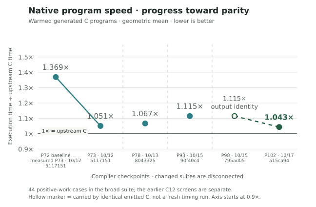
The complete earlier series stays visible, including its largest improvements.
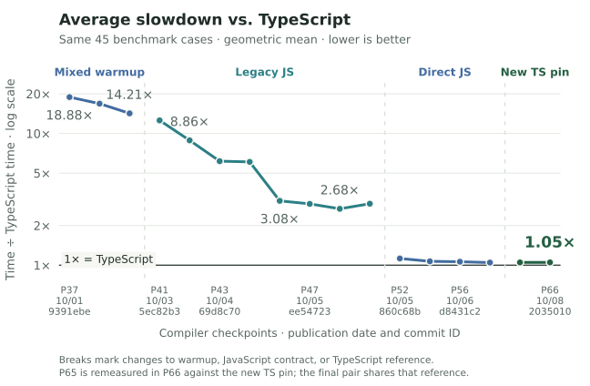
Each bar compares with the paired upstream compiler.
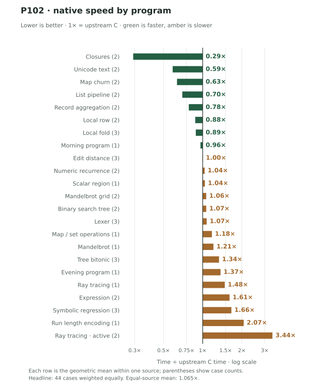
For each input, divide the median Bend-generated C execution time by the paired upstream-generated C time. Take the geometric mean across 44 positive-work inputs. Three alternating rounds per comparator; all 45 catalog points pass semantic controls.
The same upstream baseline, one program at a time.
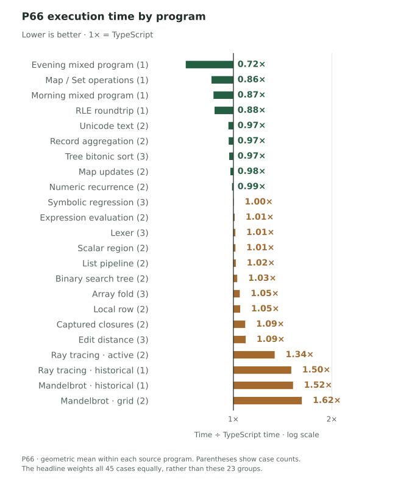
Geometric mean of 45 Bend / upstream JS median execution-time ratios. Grouping by source produces 23 bars; equal-source weighting gives 1.047×. Execution timing excludes compilation, imports, first call and warmup. Independently executed B1 programs and exact B1/B2 emitted-byte equality have separate receipts. Five role/case pairs retain drift or spread flags in the source report.
Both tracks compare programs compiled from the same Bend source. Native and JavaScript use separate output targets, cohorts and timing protocols; their histories remain separate.
| Program / input | Bend C (ms) | Upstream C (ms) | Time ratio | Evidence |
|---|---|---|---|---|
| Mandelbrot | 0.026681 | 0.022056 | 1.2097× | Source report ↗ |
| Editdist | 0.838926 | 0.838926 | 1.0000× | Source report ↗ |
| Tree bitonic | 0.165000 | 0.123000 | 1.3415× | Source report ↗ |
| Lexer | 0.392012 | 0.363905 | 1.0772× | Source report ↗ |
| Symreg | 2.327778 | 1.400000 | 1.6627× | Source report ↗ |
| Test morning program | 0.003459 | 0.003597 | 0.9615× | Source report ↗ |
| Test evening program | 0.001069 | 0.000779 | 1.3720× | Source report ↗ |
| Test rle roundtrip | 0.000433 | 0.000209 | 2.0669× | Source report ↗ |
| Test map set ops | 0.010804 | 0.009178 | 1.1772× | Source report ↗ |
| Raytrace | 28.538462 | 19.307692 | 1.4781× | Source report ↗ |
| Local pair | 0.211636 | 0.212479 | 0.9960× | Source report ↗ |
| Local fold | 0.002770 | 0.003326 | 0.8328× | Source report ↗ |
| Scalar region 8192 | 0.037578 | 0.036132 | 1.0400× | Source report ↗ |
| Complete generic row32 | 0.107173 | 0.138770 | 0.7723× | Source report ↗ |
| Editdist 0 17 | 0.211636 | 0.211636 | 1.0000× | Source report ↗ |
| Editdist 3 123 | 1.704698 | 1.691275 | 1.0079× | Source report ↗ |
| Lexer 6 17 | 0.098385 | 0.091777 | 1.0720× | Source report ↗ |
| Lexer 10 123 | 1.590643 | 1.485380 | 1.0709× | Source report ↗ |
| Tree bitonic 6 17 | 0.024749 | 0.018091 | 1.3680× | Source report ↗ |
| Tree bitonic 9 123 | 0.411765 | 0.317136 | 1.2984× | Source report ↗ |
| Symreg 4 17 | 1.168067 | 0.700280 | 1.6680× | Source report ↗ |
| Symreg 7 123 | 3.905660 | 2.358491 | 1.6560× | Source report ↗ |
| Local fold 128 0 | 0.000106 | 0.000106 | 0.9960× | Source report ↗ |
| Local fold 8192 123 | 0.005525 | 0.006603 | 0.8367× | Source report ↗ |
| Mandelbrot grid 4 7 | 0.009127 | 0.008244 | 1.1071× | Source report ↗ |
| Mandelbrot grid 5 31 | 0.145289 | 0.141884 | 1.0240× | Source report ↗ |
| Ray active 64 2440 | 0.110058 | 0.031903 | 3.4498× | Source report ↗ |
| Ray active 256 2240 | 0.455228 | 0.132976 | 3.4234× | Source report ↗ |
| Closures 64 | 0.000774 | 0.002604 | 0.2971× | Source report ↗ |
| Closures 256 | 0.002963 | 0.010298 | 0.2877× | Source report ↗ |
| List pipeline 128 | 0.001394 | 0.002028 | 0.6875× | Source report ↗ |
| List pipeline 512 | 0.005714 | 0.008078 | 0.7074× | Source report ↗ |
| Bst 32 | 0.005994 | 0.005585 | 1.0732× | Source report ↗ |
| Bst 64 | 0.007153 | 0.006763 | 1.0576× | Source report ↗ |
| Unicode text 16 | 0.013289 | 0.022591 | 0.5882× | Source report ↗ |
| Unicode text 64 | 0.058482 | 0.099528 | 0.5876× | Source report ↗ |
| Expression 32 | 0.002190 | 0.001355 | 1.6162× | Source report ↗ |
| Expression 128 | 0.008585 | 0.005358 | 1.6022× | Source report ↗ |
| Map churn 32 | 0.046282 | 0.070966 | 0.6522× | Source report ↗ |
| Map churn 128 | 0.231413 | 0.374535 | 0.6179× | Source report ↗ |
| Numeric recurrence 256 | 0.000814 | 0.000814 | 1.0000× | Source report ↗ |
| Numeric recurrence 1024 | 0.003499 | 0.003261 | 1.0730× | Source report ↗ |
| Record aggregation 64 | 0.103661 | 0.131633 | 0.7875× | Source report ↗ |
| Record aggregation 256 | 0.401264 | 0.516588 | 0.7768× | Source report ↗ |
| Checkpoint | Time / upstream C | Cohort | Evidence status | Source |
|---|---|---|---|---|
| P72 baseline · P73 run | 1.369026× | original-c12 | fresh-paired | Source report ↗ |
| P73 ownership | 1.050596× | original-c12 | fresh-paired | Source report ↗ |
| P78 · original C12 | 1.066776× | original-c12 | historical | Source report ↗ |
| P93 · native 44-point cohort | 1.114840× | native-original45-positive44 | fresh | Source report ↗ |
| P98 · unchanged outputs | 1.114840× | native-original45-positive44 | carried-forward | Source report ↗ |
| P102 · candidate04 | 1.043461× | native-original45-positive44 | fresh | Source report ↗ |
| Compiler release / commit | Release date | Average / TS | Cases | TS reference | Timing window | Source | Measurement note |
|---|---|---|---|---|---|---|---|
| Phase 37 · 9391ebe ↗ | 2026-10-01 17:00:35 UTC | 18.881× | 45 | 0187512 | Warmed program execution | Report ↗ | Historical/variation points:1,000ms warmup/300ms target. New families:600ms warmup/250ms target. |
| Phase 39 · e95b1c9 ↗ | 2026-10-01 21:10:07 UTC | 16.842× | 45 | 0187512 | Warmed program execution | Report ↗ | Historical/variation points:1,000ms warmup/300ms target. New families:600ms warmup/250ms target. |
| Phase 40 · 8582de7 ↗ | 2026-10-03 08:31:50 UTC | 14.21× | 45 | 0187512 | Warmed program execution | Report ↗ | 42 exact-output comparisons reused; three fresh comparisons. |
| Phase 41 · 5ec82b3 ↗ | 2026-10-03 18:03:39 UTC | 12.569× | 45 | 0187512 | Warmed program execution | Report ↗ | Phase41 image measured as same-run baseline in Phase42. |
| Phase 42 · 714c5f5 ↗ | 2026-10-03 23:30:39 UTC | 8.862× | 45 | 0187512 | Warmed program execution | Report ↗ | 1,000ms warmup/300ms target. |
| Phase 43 · 69d8c70 ↗ | 2026-10-04 04:51:32 UTC | 6.161× | 45 | 0187512 | Warmed program execution | Report ↗ | 1,000ms warmup/300ms target. |
| Phase 44 · 8f57b1b ↗ | 2026-10-04 09:05:57 UTC | 6.083× | 45 | 0187512 | Warmed program execution | Report ↗ | 1,000ms warmup/300ms target. |
| Phase 45 · ab74ece ↗ | 2026-10-04 19:21:20 UTC | 3.079× | 45 | 0187512 | Warmed program execution | Report ↗ | Same-run previous Phase44 average:6.086717×; latest/previous pair improves1.977073×. |
| Phase 47 · ee54723 ↗ | 2026-10-05 01:36:56 UTC | 2.919× | 45 | 0187512 | Warmed program execution | Report ↗ | 1,000ms warmup / 300ms target; all669 fresh samples. The prior release is remeasured in this campaign. Fresh paired average 3.085148× → 2.919418× TypeScript; speedup 1.056768×. |
| Phase 48 · 2d6e5d8 ↗ | 2026-10-05 05:16:52 UTC | 2.679× | 45 | 0187512 | Warmed program execution | Report ↗ | 1,000ms warmup / 300ms target; all669 fresh samples. The prior release is remeasured in this campaign. Fresh paired average 2.902438× → 2.678937× TypeScript; speedup 1.083429×. |
| Phase 51 · 3accb46 ↗ | 2026-10-05 08:22:45 UTC | 2.928× | 45 | 0187512 | Warmed program execution | Report ↗ | Historical P48 RNFA04 ratio2.678936986 differs from fresh unchanged baseline3.007942236; trend is a campaign snapshot, not a controlled regression. Fresh paired comparison improves1.027364×; Evening gain warmup-sensitive. Fresh paired average 3.007942× → 2.927825× TypeScript; speedup 1.027364×. |
| Phase 52 · 860c68b ↗ | 2026-10-05 17:54:03 UTC | 1.124× | 45 | 0187512 | Warmed program execution | Report ↗ | Historical P51 ratio2.927825260 is not this run's denominator; fresh P51 ratio2.630605061. Contract boundary must remain visible on timeline even with same45 source/input cohort and inherited timing preset. Installed with one unwaived independent semantic failure (95/96); original NaN source oracle40 differs from candidate39 and TypeScript1. Direct JavaScript is opt-in at this checkpoint; legacy remains the ordinary default. Fresh paired average 2.630605× → 1.123799× TypeScript; speedup 2.340815×. |
| Phase 53 · 29dbaa4 ↗ | 2026-10-06 00:18:42 UTC | 1.07× | 45 | 0187512 | Warmed program execution | Report ↗ | Original independent semantics96/96; candidate fixes NaN source oracle40 while TypeScript remains1. Default-only correction screen is flat1.001759×; full speed result includes ordered lowering. Direct JavaScript becomes the default. Same direct calling contract asPhase52. Fresh paired average 1.129266× → 1.069599× TypeScript; speedup 1.055785×. |
| Phase 56 · d8431c2 ↗ | 2026-10-06 05:07:01 UTC | 1.062× | 45 | 0187512 | Warmed program execution | Report ↗ | Freshly measured as the P58 campaign baseline, not a full 45-case run from the P56 release. At P56, 44 points retained P53 byte identity and one MapSet point improved by 15.9%. These timings use B1-generated programs. Separately qualified B2 emits byte-identical benchmark programs; no additional B2 runtime sample is claimed. |
| Phase 58 · 6eecaef ↗ | 2026-10-06 11:31:04 UTC | 1.046× | 45 | 0187512 | Warmed program execution | Report ↗ | Selected last01 installed; earlier shared01 wasneverinstalled. Same-run45point fresh comparison against installed-at-startP56String01; all669samples pass. Timing uses the installed checked-derived B1. Separately qualified B2 emits byte-identical benchmark programs; no additional B2 runtime sample is claimed. Same-run Phase56 baseline1.061731× → last01 1.046110× TypeScript;1.47% less execution time. Earlier uninstalled shared01 is excluded. |
| Phase 65 · measured in P66 · ef7c657 ↗ | 2026-10-08 04:48:07 UTC | 1.049× | 45 | 0592662 | Warmed program execution | Report ↗ | Fresh Phase66 baseline measurement of Phase65 State10 programs, not a new execution campaign from Phase65 itself. New TypeScript pin 0592662 changes the denominator, so the line breaks from the old-reference history. The same 45 points retain source bytes, arguments and exact expected values. Checked B1-generated modules are timed; B2 full-module equality is separately qualified. |
| Phase 66 · 2035010 ↗ | 2026-10-08 08:50:21 UTC | 1.049× | 45 | 0592662 | Warmed program execution | Report ↗ | Fresh selected final07 campaign: 669/669 samples across unchanged 45 points/23 sources. Same-campaign Phase65 baseline 1.048887× → final07 1.049282× new TypeScript; observed execution time +0.038%, effectively flat. All selected B1/B2 complete modules match. Small changes retain sample ranges and drift; none is a disjoint candidate regression against the old sample range. |
| Program / source | Cases | Average / TS |
|---|---|---|
| Evening mixed program | 1 | 0.715× |
| Map / Set operations | 1 | 0.857× |
| Morning mixed program | 1 | 0.869× |
| RLE roundtrip | 1 | 0.876× |
| Unicode text · 2 inputs | 2 | 0.966× |
| Record aggregation · 2 inputs | 2 | 0.968× |
| Tree bitonic sort · 3 inputs | 3 | 0.971× |
| Map updates · 2 inputs | 2 | 0.979× |
| Numeric recurrence · 2 inputs | 2 | 0.991× |
| Symbolic regression · 3 inputs | 3 | 1.003× |
| Expression evaluation · 2 inputs | 2 | 1.009× |
| Lexer · 3 inputs | 3 | 1.014× |
| Scalar region · 2 inputs | 2 | 1.015× |
| List pipeline · 2 inputs | 2 | 1.017× |
| Binary search tree · 2 inputs | 2 | 1.027× |
| Array fold · 3 inputs | 3 | 1.046× |
| Local row · 2 inputs | 2 | 1.049× |
| Captured closures · 2 inputs | 2 | 1.087× |
| Edit distance · 3 inputs | 3 | 1.09× |
| Ray tracing · active · 2 inputs | 2 | 1.337× |
| Ray tracing · historical | 1 | 1.503× |
| Mandelbrot · historical | 1 | 1.522× |
| Mandelbrot grid · 2 inputs | 2 | 1.619× |
| Case | Bend (ms) | TypeScript (ms) | Bend / TS | Source |
|---|---|---|---|---|
| mandelbrot | 0.069404 | 0.045605 | 1.522× | Report ↗ |
| editdist | 5.474419 | 5.038633 | 1.086× | Report ↗ |
| tree-bitonic | 0.265891 | 0.273096 | 0.974× | Report ↗ |
| lexer | 1.694971 | 1.667811 | 1.016× | Report ↗ |
| symreg | 1.104141 | 1.101162 | 1.003× | Report ↗ |
| test-morning-program | 0.002822 | 0.003246 | 0.869× | Report ↗ |
| test-evening-program | 0.001852 | 0.00259 | 0.715× | Report ↗ |
| test-rle-roundtrip | 0.000501 | 0.000572 | 0.876× | Report ↗ |
| test-map-set-ops | 0.017813 | 0.020784 | 0.857× | Report ↗ |
| raytrace | 51.400998 | 34.199433 | 1.503× | Report ↗ |
| local-pair | 1.353504 | 1.263781 | 1.071× | Report ↗ |
| local-fold | 0.041311 | 0.041184 | 1.003× | Report ↗ |
| scalar-region-0 | 0.000069 | 0.000067 | 1.021× | Report ↗ |
| scalar-region-8192 | 0.100513 | 0.099699 | 1.008× | Report ↗ |
| complete-generic-row32 | 0.007034 | 0.006846 | 1.027× | Report ↗ |
| variation-editdist-0-17 | 1.360057 | 1.247974 | 1.09× | Report ↗ |
| variation-editdist-3-123 | 10.89147 | 9.958702 | 1.094× | Report ↗ |
| variation-lexer-6-17 | 0.413523 | 0.410687 | 1.007× | Report ↗ |
| variation-lexer-10-123 | 6.75371 | 6.631167 | 1.018× | Report ↗ |
| variation-tree-bitonic-6-17 | 0.036479 | 0.036955 | 0.987× | Report ↗ |
| variation-tree-bitonic-9-123 | 0.661893 | 0.694828 | 0.953× | Report ↗ |
| variation-symreg-4-17 | 0.55826 | 0.557423 | 1.002× | Report ↗ |
| variation-symreg-7-123 | 1.871555 | 1.865114 | 1.003× | Report ↗ |
| variation-local-fold-128-0 | 0.001437 | 0.00141 | 1.019× | Report ↗ |
| variation-local-fold-8192-123 | 0.127729 | 0.114103 | 1.119× | Report ↗ |
| variation-mandelbrot-grid-4-7 | 0.026027 | 0.015669 | 1.661× | Report ↗ |
| variation-mandelbrot-grid-5-31 | 0.367007 | 0.232607 | 1.578× | Report ↗ |
| variation-ray-active-64-2440 | 0.415991 | 0.303909 | 1.369× | Report ↗ |
| variation-ray-active-256-2240 | 1.630477 | 1.248078 | 1.306× | Report ↗ |
| coverage-closures-64 | 0.00562 | 0.005195 | 1.082× | Report ↗ |
| coverage-closures-256 | 0.021332 | 0.019537 | 1.092× | Report ↗ |
| coverage-list-pipeline-128 | 0.006532 | 0.006425 | 1.017× | Report ↗ |
| coverage-list-pipeline-512 | 0.02799 | 0.027499 | 1.018× | Report ↗ |
| coverage-bst-32 | 0.022787 | 0.022025 | 1.035× | Report ↗ |
| coverage-bst-64 | 0.051864 | 0.05083 | 1.02× | Report ↗ |
| coverage-unicode-text-16 | 0.020267 | 0.021404 | 0.947× | Report ↗ |
| coverage-unicode-text-64 | 0.084148 | 0.085439 | 0.985× | Report ↗ |
| coverage-expression-32 | 0.002028 | 0.00203 | 0.999× | Report ↗ |
| coverage-expression-128 | 0.009131 | 0.00896 | 1.019× | Report ↗ |
| coverage-map-churn-32 | 0.137208 | 0.141159 | 0.972× | Report ↗ |
| coverage-map-churn-128 | 0.753706 | 0.764288 | 0.986× | Report ↗ |
| coverage-numeric-recurrence-256 | 0.002046 | 0.002036 | 1.005× | Report ↗ |
| coverage-numeric-recurrence-1024 | 0.007648 | 0.007832 | 0.976× | Report ↗ |
| coverage-record-aggregation-64 | 0.280206 | 0.29799 | 0.94× | Report ↗ |
| coverage-record-aggregation-256 | 1.239257 | 1.244538 | 0.996× | Report ↗ |
23 original programs · 45 input points · fresh compiler processes.
Complete compiler-process time to emit C; includes startup and preparation. Clang excluded.
Prepared standard library (Base): native reuses a checked artifact; upstream checks Base from source. In live mode, both check Base from source. Creating the reusable artifact is an excluded offline setup cost.
23 programs · JavaScript host and output · Phase 91.
First check-and-emit request after loading; process startup and cache preparation excluded.
Both JavaScript compilers use prepared standard-library caches. This request clock differs from the native complete-process clock.
The same 1.79 MB Bend source, kept separate from the ordinary-program average.
143.646 s native · 48.442 s upstream
Two process-time observations per compiler. Emits C; the subsequent Clang build is excluded.
Upstream comparisons retain their own workloads and clocks.
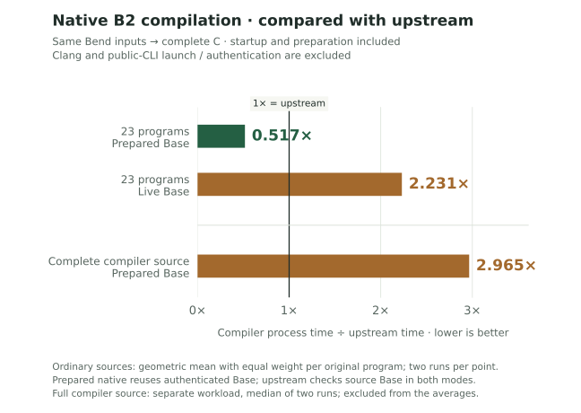
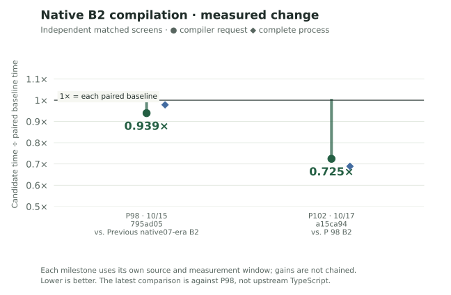
The complete earlier series stays visible, including its largest improvements.
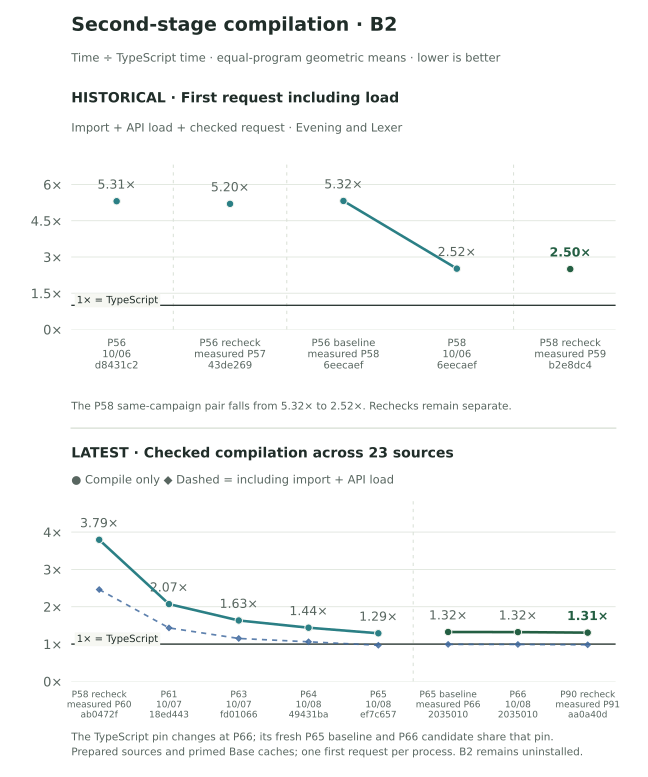
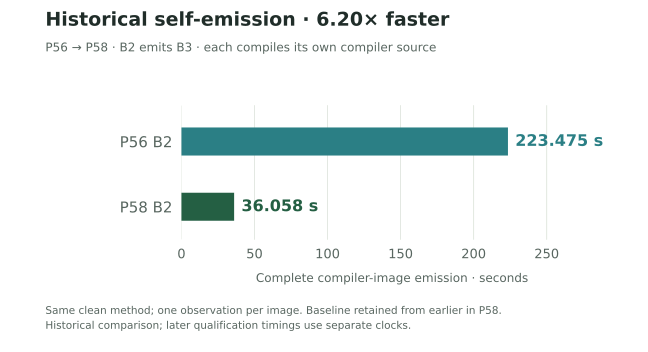
Each bar compares with the paired upstream compiler.
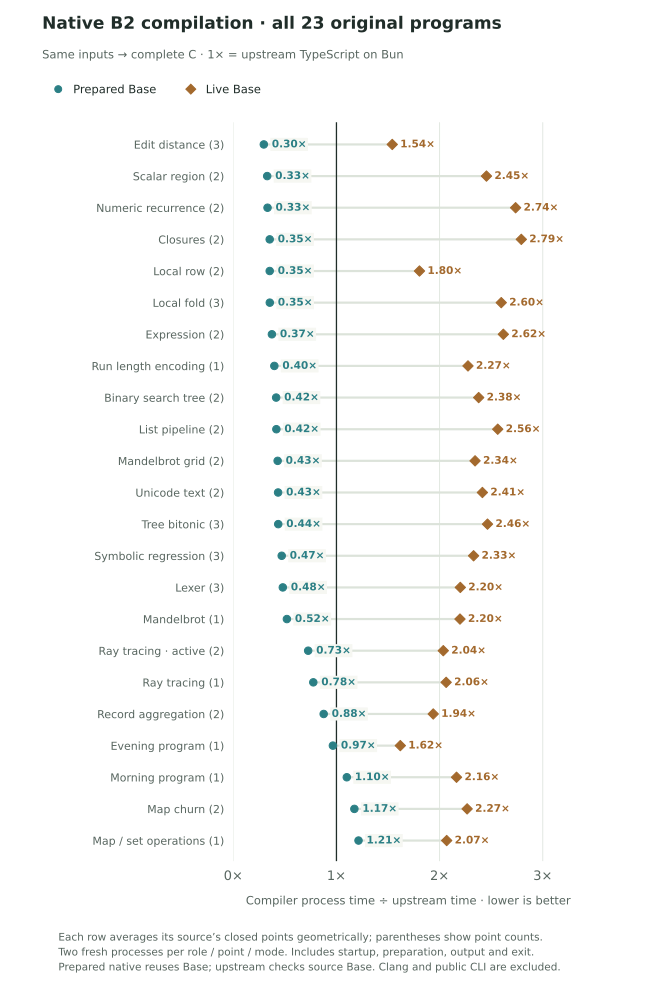
Use the geometric mean of input-level native / upstream process-time ratios within each original program, then the geometric mean across 23 programs. Two fresh observations per role, mode and point. Native and upstream have different internal request clocks, so only the shared child-process clock supplies these ratios.
The same upstream baseline, one program at a time.
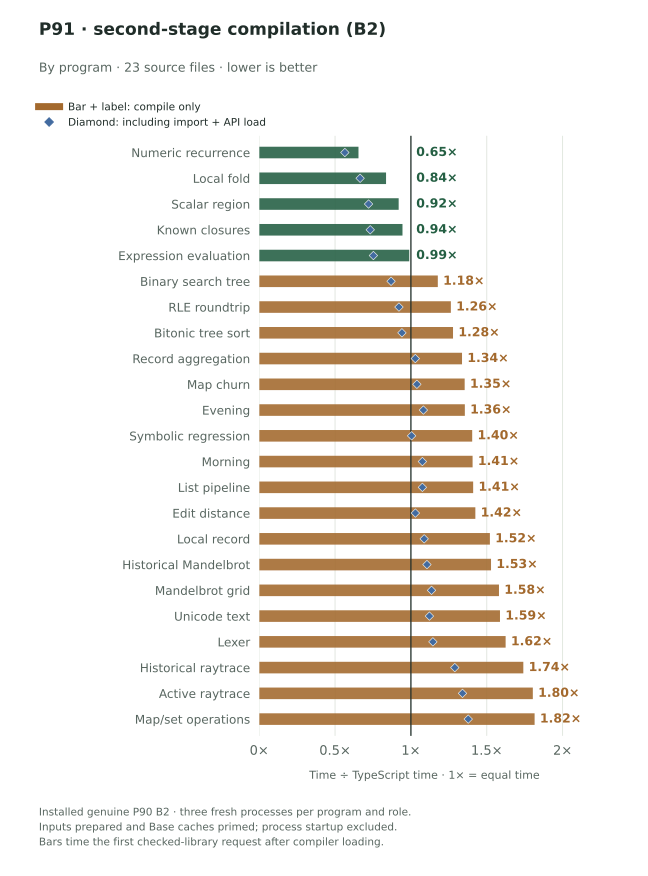
The headline times the first ordinary check + library-emission request, after import and API loading. The secondary figure includes import and API loading. Both use prepared standard-library caches and the median of three fresh processes per source and role. Process launch, cache preparation, provenance and output validation are outside both clocks; these are not steady-state, end-to-end CLI or cold-filesystem measurements.
Prepared Base makes ordinary native compilation faster than upstream on this corpus. Live Base and the complete compiler source remain slower. These are distinct workloads, so there is no single combined speed score.
| Original program | Input points | Prepared / upstream | Live Base / upstream | Evidence |
|---|---|---|---|---|
| Mandelbrot | 1 | 0.5196× | 2.1974× | Source report ↗ |
| Editdist | 3 | 0.2960× | 1.5408× | Source report ↗ |
| Tree bitonic | 3 | 0.4358× | 2.4641× | Source report ↗ |
| Lexer | 3 | 0.4801× | 2.2005× | Source report ↗ |
| Symreg | 3 | 0.4694× | 2.3292× | Source report ↗ |
| Test morning program | 1 | 1.1004× | 2.1639× | Source report ↗ |
| Test evening program | 1 | 0.9655× | 1.6190× | Source report ↗ |
| Test rle roundtrip | 1 | 0.3980× | 2.2749× | Source report ↗ |
| Test map set ops | 1 | 1.2139× | 2.0685× | Source report ↗ |
| Raytrace | 1 | 0.7756× | 2.0634× | Source report ↗ |
| Local row | 2 | 0.3531× | 1.8046× | Source report ↗ |
| Local fold | 3 | 0.3540× | 2.5973× | Source report ↗ |
| Scalar region | 2 | 0.3287× | 2.4540× | Source report ↗ |
| Mandelbrot grid | 2 | 0.4300× | 2.3435× | Source report ↗ |
| Raytrace active | 2 | 0.7259× | 2.0355× | Source report ↗ |
| Closures | 2 | 0.3530× | 2.7917× | Source report ↗ |
| List pipeline | 2 | 0.4176× | 2.5633× | Source report ↗ |
| Bst | 2 | 0.4156× | 2.3786× | Source report ↗ |
| Unicode text | 2 | 0.4343× | 2.4145× | Source report ↗ |
| Expression | 2 | 0.3743× | 2.6176× | Source report ↗ |
| Map churn | 2 | 1.1738× | 2.2667× | Source report ↗ |
| Numeric recurrence | 2 | 0.3320× | 2.7365× | Source report ↗ |
| Record aggregation | 2 | 0.8762× | 1.9380× | Source report ↗ |
| Input point | Native process (ms) | Upstream process (ms) | Time / upstream | Evidence |
|---|---|---|---|---|
| Mandelbrot | 389.209 | 749.014 | 0.5196× | Source report ↗ |
| Editdist | 294.835 | 1033.723 | 0.2852× | Source report ↗ |
| Tree bitonic | 277.900 | 627.590 | 0.4428× | Source report ↗ |
| Lexer | 347.567 | 747.430 | 0.4650× | Source report ↗ |
| Symreg | 326.684 | 727.183 | 0.4492× | Source report ↗ |
| Test morning program | 1360.335 | 1236.205 | 1.1004× | Source report ↗ |
| Test evening program | 1653.818 | 1712.906 | 0.9655× | Source report ↗ |
| Test rle roundtrip | 244.874 | 615.192 | 0.3980× | Source report ↗ |
| Test map set ops | 1826.993 | 1505.012 | 1.2139× | Source report ↗ |
| Raytrace | 738.076 | 951.677 | 0.7756× | Source report ↗ |
| Local pair | 295.290 | 1077.857 | 0.2740× | Source report ↗ |
| Local fold | 190.132 | 535.015 | 0.3554× | Source report ↗ |
| Scalar region 0 | 197.551 | 585.146 | 0.3376× | Source report ↗ |
| Scalar region 8192 | 197.317 | 616.615 | 0.3200× | Source report ↗ |
| Complete generic row32 | 314.433 | 690.911 | 0.4551× | Source report ↗ |
| Editdist 0 17 | 295.478 | 988.398 | 0.2989× | Source report ↗ |
| Editdist 3 123 | 295.490 | 971.627 | 0.3041× | Source report ↗ |
| Lexer 6 17 | 358.147 | 699.546 | 0.5120× | Source report ↗ |
| Lexer 10 123 | 350.044 | 752.918 | 0.4649× | Source report ↗ |
| Tree bitonic 6 17 | 279.346 | 650.628 | 0.4293× | Source report ↗ |
| Tree bitonic 9 123 | 280.602 | 644.742 | 0.4352× | Source report ↗ |
| Symreg 4 17 | 325.718 | 669.424 | 0.4866× | Source report ↗ |
| Symreg 7 123 | 327.770 | 692.618 | 0.4732× | Source report ↗ |
| Local fold 128 0 | 190.668 | 534.072 | 0.3570× | Source report ↗ |
| Local fold 8192 123 | 190.404 | 544.729 | 0.3495× | Source report ↗ |
| Mandelbrot grid 4 7 | 283.457 | 662.776 | 0.4277× | Source report ↗ |
| Mandelbrot grid 5 31 | 281.635 | 651.289 | 0.4324× | Source report ↗ |
| Ray active 64 2440 | 702.759 | 966.182 | 0.7274× | Source report ↗ |
| Ray active 256 2240 | 708.940 | 978.623 | 0.7244× | Source report ↗ |
| Closures 64 | 186.866 | 536.945 | 0.3480× | Source report ↗ |
| Closures 256 | 187.909 | 524.696 | 0.3581× | Source report ↗ |
| List pipeline 128 | 230.579 | 545.422 | 0.4228× | Source report ↗ |
| List pipeline 512 | 230.341 | 558.346 | 0.4125× | Source report ↗ |
| Bst 32 | 246.716 | 606.449 | 0.4068× | Source report ↗ |
| Bst 64 | 245.218 | 577.672 | 0.4245× | Source report ↗ |
| Unicode text 16 | 261.965 | 596.783 | 0.4390× | Source report ↗ |
| Unicode text 64 | 262.081 | 609.922 | 0.4297× | Source report ↗ |
| Expression 32 | 205.601 | 545.988 | 0.3766× | Source report ↗ |
| Expression 128 | 201.765 | 542.270 | 0.3721× | Source report ↗ |
| Map churn 32 | 1270.037 | 1031.970 | 1.2307× | Source report ↗ |
| Map churn 128 | 1276.290 | 1140.041 | 1.1195× | Source report ↗ |
| Numeric recurrence 256 | 172.713 | 523.801 | 0.3297× | Source report ↗ |
| Numeric recurrence 1024 | 172.371 | 515.511 | 0.3344× | Source report ↗ |
| Record aggregation 64 | 1104.475 | 1279.074 | 0.8635× | Source report ↗ |
| Record aggregation 256 | 1101.589 | 1238.932 | 0.8891× | Source report ↗ |
| Input point | Native process (ms) | Upstream process (ms) | Time / upstream | Evidence |
|---|---|---|---|---|
| Mandelbrot | 1616.759 | 735.775 | 2.1974× | Source report ↗ |
| Editdist | 1526.108 | 984.807 | 1.5497× | Source report ↗ |
| Tree bitonic | 1509.527 | 606.908 | 2.4872× | Source report ↗ |
| Lexer | 1591.231 | 719.129 | 2.2127× | Source report ↗ |
| Symreg | 1563.496 | 681.022 | 2.2958× | Source report ↗ |
| Test morning program | 2592.690 | 1198.174 | 2.1639× | Source report ↗ |
| Test evening program | 2878.235 | 1777.806 | 1.6190× | Source report ↗ |
| Test rle roundtrip | 1506.717 | 662.309 | 2.2749× | Source report ↗ |
| Test map set ops | 3055.631 | 1477.208 | 2.0685× | Source report ↗ |
| Raytrace | 1964.183 | 951.934 | 2.0634× | Source report ↗ |
| Local pair | 1550.131 | 1067.603 | 1.4520× | Source report ↗ |
| Local fold | 1423.661 | 552.257 | 2.5779× | Source report ↗ |
| Scalar region 0 | 1434.714 | 574.338 | 2.4980× | Source report ↗ |
| Scalar region 8192 | 1434.381 | 595.001 | 2.4107× | Source report ↗ |
| Complete generic row32 | 1548.792 | 690.515 | 2.2430× | Source report ↗ |
| Editdist 0 17 | 1533.020 | 983.888 | 1.5581× | Source report ↗ |
| Editdist 3 123 | 1528.252 | 1008.690 | 1.5151× | Source report ↗ |
| Lexer 6 17 | 1589.420 | 704.009 | 2.2577× | Source report ↗ |
| Lexer 10 123 | 1576.844 | 739.317 | 2.1328× | Source report ↗ |
| Tree bitonic 6 17 | 1518.518 | 624.833 | 2.4303× | Source report ↗ |
| Tree bitonic 9 123 | 1511.219 | 610.587 | 2.4750× | Source report ↗ |
| Symreg 4 17 | 1562.506 | 652.883 | 2.3932× | Source report ↗ |
| Symreg 7 123 | 1555.709 | 676.439 | 2.2999× | Source report ↗ |
| Local fold 128 0 | 1421.027 | 551.828 | 2.5751× | Source report ↗ |
| Local fold 8192 123 | 1427.773 | 540.922 | 2.6395× | Source report ↗ |
| Mandelbrot grid 4 7 | 1519.817 | 657.917 | 2.3100× | Source report ↗ |
| Mandelbrot grid 5 31 | 1515.195 | 637.307 | 2.3775× | Source report ↗ |
| Ray active 64 2440 | 1933.715 | 938.236 | 2.0610× | Source report ↗ |
| Ray active 256 2240 | 1952.725 | 971.371 | 2.0103× | Source report ↗ |
| Closures 64 | 1424.522 | 513.875 | 2.7721× | Source report ↗ |
| Closures 256 | 1446.979 | 514.679 | 2.8114× | Source report ↗ |
| List pipeline 128 | 1465.196 | 579.569 | 2.5281× | Source report ↗ |
| List pipeline 512 | 1466.600 | 564.307 | 2.5989× | Source report ↗ |
| Bst 32 | 1475.127 | 596.509 | 2.4729× | Source report ↗ |
| Bst 64 | 1481.112 | 647.370 | 2.2879× | Source report ↗ |
| Unicode text 16 | 1504.741 | 626.880 | 2.4004× | Source report ↗ |
| Unicode text 64 | 1497.745 | 616.658 | 2.4288× | Source report ↗ |
| Expression 32 | 1438.967 | 568.277 | 2.5322× | Source report ↗ |
| Expression 128 | 1458.197 | 538.880 | 2.7060× | Source report ↗ |
| Map churn 32 | 2505.459 | 1105.118 | 2.2671× | Source report ↗ |
| Map churn 128 | 2527.284 | 1115.213 | 2.2662× | Source report ↗ |
| Numeric recurrence 256 | 1459.665 | 520.870 | 2.8024× | Source report ↗ |
| Numeric recurrence 1024 | 1402.277 | 524.772 | 2.6722× | Source report ↗ |
| Record aggregation 64 | 2340.923 | 1193.932 | 1.9607× | Source report ↗ |
| Record aggregation 256 | 2333.722 | 1218.341 | 1.9155× | Source report ↗ |
| Mode | Compiler | Process time (s) | Time / upstream | Observations |
|---|---|---|---|---|
| Prepared Base | Upstream TS/Bun | 48.442 | 1.0000× | 2 |
| Prepared Base | Native B2 | 143.646 | 2.9653× | 2 |
| Live Base | Upstream TS/Bun | 48.122 | 1.0000× | 1 |
| Live Base | Native B2 | 147.031 | 3.0554× | 1 |
| Source | Phase 98 request (ms) | Current request (ms) | Request ratio | Process ratio | Evidence |
|---|---|---|---|---|---|
| Small | 64.00 | 47.00 | 0.7344× | 0.6877× | Source report ↗ |
| Numeric | 109.00 | 78.50 | 0.7202× | 0.6969× | Source report ↗ |
| Lexer | 428.00 | 307.50 | 0.7185× | 0.6920× | Source report ↗ |
| Map | 1660.00 | 1176.50 | 0.7087× | 0.7009× | Source report ↗ |
| Functions65 | 259.00 | 192.00 | 0.7413× | 0.7170× | Source report ↗ |
| Unicode | 63.50 | 46.00 | 0.7244× | 0.6421× | Source report ↗ |
| Phase | Stage | Paired baseline (s) | Self-emission (s) | Scope | Evidence |
|---|---|---|---|---|---|
| P98 | B1 | 135.465 | 104.821 | Single matched pair for B1; two balanced rounds for B2. Different source fromPhase 102; do not draw a continuous speed trend. | Source report ↗ |
| P102 | B1 | — | 126.584 | Candidate04 B1 and B2 emit the same 30,373,059-byte C. No current self-speed gain claim. | Source report ↗ |
| P98 | B2 | 150.471 | 140.988 | Single matched pair for B1; two balanced rounds for B2. Different source fromPhase 102; do not draw a continuous speed trend. | Source report ↗ |
| P102 | B2 | — | 150.846 | Candidate04 B1 and B2 emit the same 30,373,059-byte C. No current self-speed gain claim. | Source report ↗ |
| Observation / report commit | Publication date | Average / TS | Programs | TS reference | Timing window | Source | Measurement note |
|---|---|---|---|---|---|---|---|
| P56 · d8431c2 ↗ | 2026-10-06 05:07:01 UTC | 5.309× | 2 | 0187512 | host_import_plus_actual_api_load_plus_first_checked_direct_library_request | Report ↗ | Original Phase56 screen. Host import plus first request includes lazy API loading. Three rotated fresh processes per role and input; no later requests. P55 has no comparable two-program B2 latency measurement. |
| P57 recheck · 43de269 ↗ | 2026-10-06 07:17:29 UTC | 5.199× | 2 | 0187512 | host_import_plus_actual_api_load_plus_first_checked_direct_library_request | Report ↗ | Phase57 remeasures unchanged Phase56 B2. Load is now explicit host import plus actual API load, followed by first request and three later requests. This is a new acquisition campaign, not a compiler optimization. |
| P56 recheck · 6eecaef ↗ | 2026-10-06 11:31:04 UTC | 5.32× | 2 | 0187512 | host_import_plus_actual_api_load_plus_first_checked_direct_library_request | Report ↗ | Phase56 B2 freshly remeasured as the old compiler in the final Phase58 last01 request campaign. Both this baseline and the selected image use their own same-campaign TypeScript samples. The observation belongs to Phase58, not the Phase56 release date. |
| P58 last01 · 6eecaef ↗ | 2026-10-06 11:31:04 UTC | 2.517× | 2 | 0187512 | host_import_plus_actual_api_load_plus_first_checked_direct_library_request | Report ↗ | Final selected last01 B2, independently qualified but not installed. Three rotated fresh processes per compiler and input, each with one first and three later requests. Excludes superseded shared01 and syntax-only diagnostic derivatives. |
| P58 image · P59 survey · b2e8dc4 ↗ | 2026-10-06 15:23:54 UTC | 2.5× | 2 | 0187512 | Import + API load + first compilation | Report ↗ | Measurement-only survey of unchanged Phase58 B2; no new compiler release or optimization. Exact medians recovered from hash-verified public evidence archive. |
| P58 image · P60 survey · ab0472f ↗ | 2026-10-07 05:45:11 UTC | 3.794× | 23 | 0187512 | Compilation only · prepared fresh process | Report ↗ | Measurement-only survey of unchanged Phase58 B2; no new compiler release or optimization. Exact medians recovered from hash-verified public evidence archive. |
| P61 · 18ed443 ↗ | 2026-10-07 16:47:48 UTC | 2.072× | 23 | 0187512 | Compilation only · prepared fresh process | Report ↗ | Fresh B2 ordinary library compilation, 23 sources and three rotated rounds per role. Preparation and compiler imports/API loading excluded from primary clock; including_imports retains the separate combined clock. |
| P63 · fd01066 ↗ | 2026-10-07 21:51:45 UTC | 1.633× | 23 | 0187512 | Compilation only · prepared fresh process | Report ↗ | Fresh B2 ordinary library compilation, 23 sources and three rotated rounds per role. Preparation and compiler imports/API loading excluded from primary clock; including_imports retains the separate combined clock. |
| P64 · 49431ba ↗ | 2026-10-08 00:10:06 UTC | 1.439× | 23 | 0187512 | Compilation only · prepared fresh process | Report ↗ | Fresh B2 ordinary library compilation, 23 sources and three rotated rounds per role. Preparation and compiler imports/API loading excluded from primary clock; including_imports retains the separate combined clock. |
| P65 · ef7c657 ↗ | 2026-10-08 04:48:07 UTC | 1.289× | 23 | 0187512 | Compilation only · prepared fresh process | Report ↗ | Fresh B2 ordinary library compilation, 23 sources and three rotated rounds per role. Preparation and compiler imports/API loading excluded from primary clock; including_imports retains the separate combined clock. |
| P65 baseline · P66 measurement · 2035010 ↗ | 2026-10-08 08:50:21 UTC | 1.324× | 23 | 0592662 | Compilation only · prepared fresh process | Report ↗ | Fresh B2 ordinary library compilation, 23 sources and three rotated rounds per role. Preparation and compiler imports/API loading excluded from primary clock; including_imports retains the separate combined clock. New TypeScript reference 0592662 replaces 0187512; do not connect this point to old-reference ratios. Small paired changes are descriptive, not established speed gains/regressions. |
| P66 · 2035010 ↗ | 2026-10-08 08:50:21 UTC | 1.321× | 23 | 0592662 | Compilation only · prepared fresh process | Report ↗ | Fresh B2 ordinary library compilation, 23 sources and three rotated rounds per role. Preparation and compiler imports/API loading excluded from primary clock; including_imports retains the separate combined clock. New TypeScript reference 0592662 replaces 0187512; do not connect this point to old-reference ratios. Small paired changes are descriptive, not established speed gains/regressions. |
| P91 · aa0a40d ↗ | 2026-10-15 04:22:04 UTC | 1.307× | 23 | 0592662 | Compilation only · prepared fresh process | Report ↗ | Fresh Phase 91 measurements of the unchanged Phase 90 JS-hosted images. Same original JS23 sources, Node24.18 and upstream reference. Prior compiler images were not rerun alongside; no paired speedup claim. Success assertions moved outside the clock in this successor harness, an instrumentation difference rather than an optimization. |
| Program | Bend compile (ms) | TypeScript compile (ms) | Compile / TS | With loading / TS | Source |
|---|---|---|---|---|---|
| Historical Mandelbrot | 626.275 | 409.852 | 1.528× | 1.106× | Program ↗ |
| Edit distance | 552.254 | 387.608 | 1.425× | 1.03× | Program ↗ |
| Bitonic tree sort | 468.756 | 366.913 | 1.278× | 0.941× | Program ↗ |
| Lexer | 629.859 | 387.77 | 1.624× | 1.145× | Program ↗ |
| Symbolic regression | 538.781 | 383.765 | 1.404× | 1.005× | Program ↗ |
| Morning | 711.319 | 505.725 | 1.407× | 1.075× | Program ↗ |
| Evening | 833.762 | 615.11 | 1.355× | 1.082× | Program ↗ |
| RLE roundtrip | 459.428 | 363.676 | 1.263× | 0.921× | Program ↗ |
| Map/set operations | 1,019.337 | 561.53 | 1.815× | 1.378× | Program ↗ |
| Historical raytrace | 867.775 | 498.435 | 1.741× | 1.289× | Program ↗ |
| Local record | 591.331 | 388.892 | 1.521× | 1.087× | Program ↗ |
| Local fold | 285.3 | 341.221 | 0.836× | 0.665× | Program ↗ |
| Scalar region | 326.402 | 355.063 | 0.919× | 0.721× | Program ↗ |
| Mandelbrot grid | 662.304 | 419.051 | 1.58× | 1.136× | Program ↗ |
| Active raytrace | 907.198 | 503 | 1.804× | 1.34× | Program ↗ |
| Known closures | 322.616 | 341.599 | 0.944× | 0.732× | Program ↗ |
| List pipeline | 686.836 | 487.01 | 1.41× | 1.076× | Program ↗ |
| Binary search tree | 430.842 | 365.96 | 1.177× | 0.869× | Program ↗ |
| Unicode text | 611.415 | 385.237 | 1.587× | 1.122× | Program ↗ |
| Expression evaluation | 336.393 | 340.142 | 0.989× | 0.753× | Program ↗ |
| Map churn | 674.303 | 497.895 | 1.354× | 1.039× | Program ↗ |
| Numeric recurrence | 217.965 | 333.058 | 0.654× | 0.565× | Program ↗ |
| Record aggregation | 660.631 | 494.151 | 1.337× | 1.029× | Program ↗ |
| Program | Bend total (ms) | TypeScript total (ms) | Bend / TS |
|---|---|---|---|
| Historical Mandelbrot | 749.33 | 677.676 | 1.106× |
| Edit distance | 674.734 | 655.356 | 1.03× |
| Bitonic tree sort | 599.968 | 637.747 | 0.941× |
| Lexer | 751.966 | 656.835 | 1.145× |
| Symbolic regression | 660.946 | 657.969 | 1.005× |
| Morning | 832.741 | 774.306 | 1.075× |
| Evening | 956.565 | 883.923 | 1.082× |
| RLE roundtrip | 581.437 | 631.205 | 0.921× |
| Map/set operations | 1,141.826 | 828.729 | 1.378× |
| Historical raytrace | 989.812 | 767.735 | 1.289× |
| Local record | 714.426 | 657.016 | 1.087× |
| Local fold | 406.962 | 611.849 | 0.665× |
| Scalar region | 449.27 | 623.317 | 0.721× |
| Mandelbrot grid | 784.65 | 690.813 | 1.136× |
| Active raytrace | 1,030.522 | 769.03 | 1.34× |
| Known closures | 445.901 | 609.239 | 0.732× |
| List pipeline | 815.508 | 758.246 | 1.076× |
| Binary search tree | 554.734 | 638.214 | 0.869× |
| Unicode text | 733.645 | 653.906 | 1.122× |
| Expression evaluation | 458.557 | 609.336 | 0.753× |
| Map churn | 796.562 | 766.359 | 1.039× |
| Numeric recurrence | 339.654 | 601.626 | 0.565× |
| Record aggregation | 786.076 | 764.01 | 1.029× |
| Compiler | Seconds | Method | Source | Scope |
|---|---|---|---|---|
| Phase56 B2 | 223.475242 | emission-method02 | Report ↗ | Retained earlier Phase58 campaign baseline; not rerun consecutively with last01. One clean worker observation, reported to six decimal seconds. |
| Phase58 last01 B2 | 36.058487 | emission-method02 | Report ↗ | One fresh clean worker observation. Compiles its own changed compiler source and independently reproduces its own complete B3 bytes. |
| Phase | Reproduction (s) | Fresh type check (s) | Source | Scope |
|---|---|---|---|---|
| P55 | Stopped at 300 s | — | Report ↗ | Phase55 host02 B2 reproduction stopped at the 300-second deadline. No completed baseline time or exact speedup exists. |
| P56 | 250.719 | 29.681 | Report ↗ | Separate fixed-point qualification worker; not the same clean emission-method02 campaign as the 223.475→36.058-second comparison. |
| P58 | 39.199 | 11.712 | Report ↗ | Separate correctness qualification gate. Fresh source acceptance and byte-identical B3 reproduction are separate obligations and clocks. |
| P61 | 34.386 | 11.397 | Report ↗ | Separate correctness qualification gate; internal total reproduction time, not the Phase58 clean-emission method. |
| P63 | — | — | Report ↗ | Fresh own-source type acceptance and exact B2/B3 reproduction pass. No comparable clean-emission duration is reported in this summary; unsafe definitions retain expected proof-trust refusal. |
| P64 | — | — | Report ↗ | Fresh own-source type acceptance and exact B2/B3 reproduction pass. No comparable clean-emission duration is reported in this summary; unsafe definitions retain expected proof-trust refusal. |
| P65 | — | — | Report ↗ | Fresh own-source type acceptance and exact B2/B3 reproduction pass. No comparable clean-emission duration is reported in this summary; unsafe definitions retain expected proof-trust refusal. |
| P66 | — | — | Report ↗ | Fresh own-source type acceptance and exact B2/B3 reproduction pass. No comparable clean-emission duration is reported in this summary; unsafe definitions retain expected proof-trust refusal. |
Three sources, Phase 91. Request average: 1.23×; with imports and API loading: 1.04× upstream time. This is C emission by a JavaScript-hosted compiler; Clang is excluded.
23 original programs · 45 input points · fresh compiler processes.
Complete compiler-process time to emit C; includes startup and preparation. Clang excluded.
Prepared standard library (Base): native reuses a checked artifact; upstream checks Base from source. In live mode, both check Base from source. Creating the reusable artifact is an excluded offline setup cost.
23 programs · JavaScript host and output · Phase 91.
First check-and-emit request after loading; process startup and cache preparation excluded.
Both JavaScript compilers use prepared standard-library caches. This request clock differs from the native complete-process clock.
The same 1.79 MB Bend source, kept separate from the ordinary-program average.
126.051 s native · 48.442 s upstream
Two process-time observations per compiler. Emits C; the subsequent Clang build is excluded.
Upstream comparisons retain their own workloads and clocks.
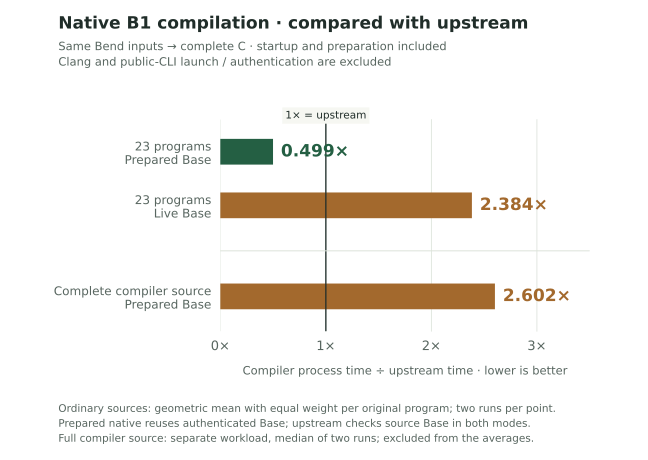
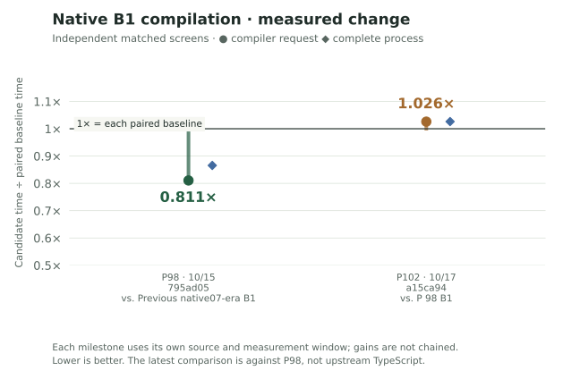
The complete earlier series stays visible, including its largest improvements.
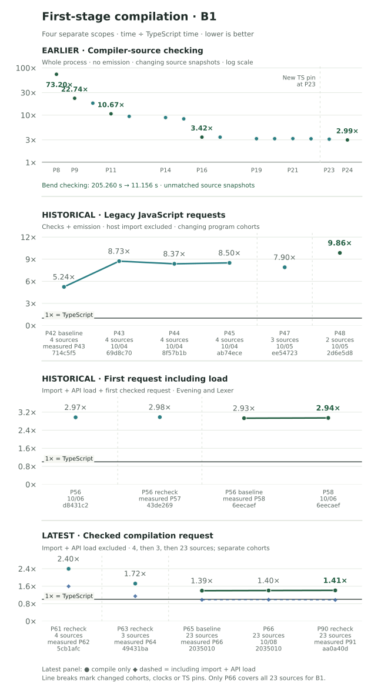
Each bar compares with the paired upstream compiler.
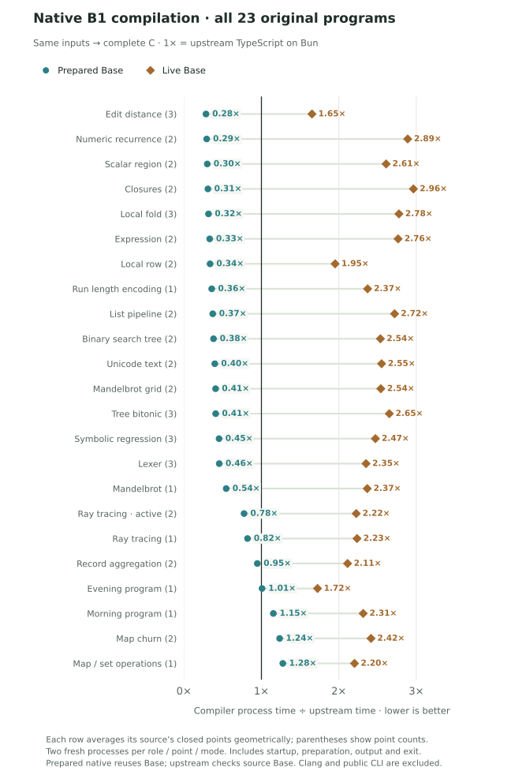
Use the geometric mean of input-level native / upstream process-time ratios within each original program, then the geometric mean across 23 programs. Two fresh observations per role, mode and point. Native and upstream have different internal request clocks, so only the shared child-process clock supplies these ratios.
The same upstream baseline, one program at a time.
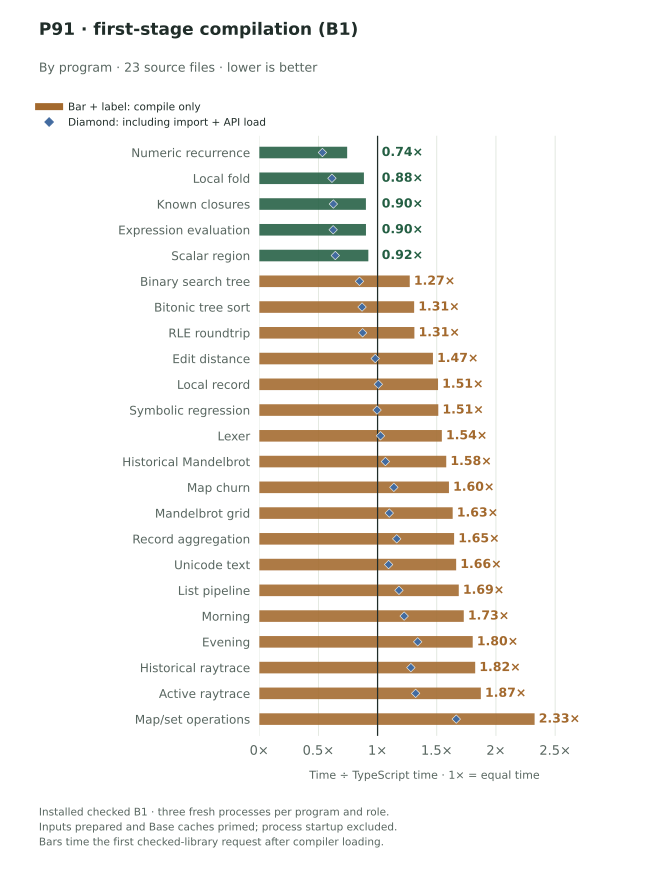
The headline times the first ordinary check + library-emission request, after import and API loading. The secondary figure includes import and API loading. Both use prepared standard-library caches and the median of three fresh processes per source and role. Process launch, cache preparation, provenance and output validation are outside both clocks; these are not steady-state, end-to-end CLI or cold-filesystem measurements.
Prepared Base makes ordinary native compilation faster than upstream on this corpus. Live Base and the complete compiler source remain slower. These are distinct workloads, so there is no single combined speed score.
| Original program | Input points | Prepared / upstream | Live Base / upstream | Evidence |
|---|---|---|---|---|
| Mandelbrot | 1 | 0.5449× | 2.3662× | Source report ↗ |
| Editdist | 3 | 0.2842× | 1.6530× | Source report ↗ |
| Tree bitonic | 3 | 0.4092× | 2.6512× | Source report ↗ |
| Lexer | 3 | 0.4552× | 2.3506× | Source report ↗ |
| Symreg | 3 | 0.4529× | 2.4717× | Source report ↗ |
| Test morning program | 1 | 1.1539× | 2.3141× | Source report ↗ |
| Test evening program | 1 | 1.0085× | 1.7246× | Source report ↗ |
| Test rle roundtrip | 1 | 0.3585× | 2.3711× | Source report ↗ |
| Test map set ops | 1 | 1.2762× | 2.2018× | Source report ↗ |
| Raytrace | 1 | 0.8206× | 2.2346× | Source report ↗ |
| Local row | 2 | 0.3372× | 1.9514× | Source report ↗ |
| Local fold | 3 | 0.3169× | 2.7757× | Source report ↗ |
| Scalar region | 2 | 0.3009× | 2.6100× | Source report ↗ |
| Mandelbrot grid | 2 | 0.4082× | 2.5416× | Source report ↗ |
| Raytrace active | 2 | 0.7760× | 2.2242× | Source report ↗ |
| Closures | 2 | 0.3094× | 2.9627× | Source report ↗ |
| List pipeline | 2 | 0.3717× | 2.7192× | Source report ↗ |
| Bst | 2 | 0.3815× | 2.5362× | Source report ↗ |
| Unicode text | 2 | 0.3982× | 2.5516× | Source report ↗ |
| Expression | 2 | 0.3323× | 2.7650× | Source report ↗ |
| Map churn | 2 | 1.2352× | 2.4152× | Source report ↗ |
| Numeric recurrence | 2 | 0.2936× | 2.8887× | Source report ↗ |
| Record aggregation | 2 | 0.9472× | 2.1123× | Source report ↗ |
| Input point | Native process (ms) | Upstream process (ms) | Time / upstream | Evidence |
|---|---|---|---|---|
| Mandelbrot | 408.172 | 749.014 | 0.5449× | Source report ↗ |
| Editdist | 281.378 | 1033.723 | 0.2722× | Source report ↗ |
| Tree bitonic | 259.975 | 627.590 | 0.4142× | Source report ↗ |
| Lexer | 336.440 | 747.430 | 0.4501× | Source report ↗ |
| Symreg | 313.955 | 727.183 | 0.4317× | Source report ↗ |
| Test morning program | 1426.506 | 1236.205 | 1.1539× | Source report ↗ |
| Test evening program | 1727.511 | 1712.906 | 1.0085× | Source report ↗ |
| Test rle roundtrip | 220.545 | 615.192 | 0.3585× | Source report ↗ |
| Test map set ops | 1920.647 | 1505.012 | 1.2762× | Source report ↗ |
| Raytrace | 780.922 | 951.677 | 0.8206× | Source report ↗ |
| Local pair | 282.482 | 1077.857 | 0.2621× | Source report ↗ |
| Local fold | 170.158 | 535.015 | 0.3180× | Source report ↗ |
| Scalar region 0 | 181.525 | 585.146 | 0.3102× | Source report ↗ |
| Scalar region 8192 | 179.922 | 616.615 | 0.2918× | Source report ↗ |
| Complete generic row32 | 299.720 | 690.911 | 0.4338× | Source report ↗ |
| Editdist 0 17 | 287.802 | 988.398 | 0.2912× | Source report ↗ |
| Editdist 3 123 | 281.358 | 971.627 | 0.2896× | Source report ↗ |
| Lexer 6 17 | 332.943 | 699.546 | 0.4759× | Source report ↗ |
| Lexer 10 123 | 331.477 | 752.918 | 0.4403× | Source report ↗ |
| Tree bitonic 6 17 | 266.646 | 650.628 | 0.4098× | Source report ↗ |
| Tree bitonic 9 123 | 260.293 | 644.742 | 0.4037× | Source report ↗ |
| Symreg 4 17 | 317.808 | 669.424 | 0.4747× | Source report ↗ |
| Symreg 7 123 | 313.966 | 692.618 | 0.4533× | Source report ↗ |
| Local fold 128 0 | 170.801 | 534.072 | 0.3198× | Source report ↗ |
| Local fold 8192 123 | 170.463 | 544.729 | 0.3129× | Source report ↗ |
| Mandelbrot grid 4 7 | 268.037 | 662.776 | 0.4044× | Source report ↗ |
| Mandelbrot grid 5 31 | 268.379 | 651.289 | 0.4121× | Source report ↗ |
| Ray active 64 2440 | 754.394 | 966.182 | 0.7808× | Source report ↗ |
| Ray active 256 2240 | 754.824 | 978.623 | 0.7713× | Source report ↗ |
| Closures 64 | 163.488 | 536.945 | 0.3045× | Source report ↗ |
| Closures 256 | 164.969 | 524.696 | 0.3144× | Source report ↗ |
| List pipeline 128 | 204.954 | 545.422 | 0.3758× | Source report ↗ |
| List pipeline 512 | 205.282 | 558.346 | 0.3677× | Source report ↗ |
| Bst 32 | 225.487 | 606.449 | 0.3718× | Source report ↗ |
| Bst 64 | 226.115 | 577.672 | 0.3914× | Source report ↗ |
| Unicode text 16 | 240.408 | 596.783 | 0.4028× | Source report ↗ |
| Unicode text 64 | 240.035 | 609.922 | 0.3936× | Source report ↗ |
| Expression 32 | 179.758 | 545.988 | 0.3292× | Source report ↗ |
| Expression 128 | 181.913 | 542.270 | 0.3355× | Source report ↗ |
| Map churn 32 | 1343.980 | 1031.970 | 1.3023× | Source report ↗ |
| Map churn 128 | 1335.521 | 1140.041 | 1.1715× | Source report ↗ |
| Numeric recurrence 256 | 152.352 | 523.801 | 0.2909× | Source report ↗ |
| Numeric recurrence 1024 | 152.773 | 515.511 | 0.2964× | Source report ↗ |
| Record aggregation 64 | 1198.300 | 1279.074 | 0.9369× | Source report ↗ |
| Record aggregation 256 | 1186.376 | 1238.932 | 0.9576× | Source report ↗ |
| Input point | Native process (ms) | Upstream process (ms) | Time / upstream | Evidence |
|---|---|---|---|---|
| Mandelbrot | 1741.024 | 735.775 | 2.3662× | Source report ↗ |
| Editdist | 1637.570 | 984.807 | 1.6628× | Source report ↗ |
| Tree bitonic | 1607.945 | 606.908 | 2.6494× | Source report ↗ |
| Lexer | 1720.181 | 719.129 | 2.3920× | Source report ↗ |
| Symreg | 1657.261 | 681.022 | 2.4335× | Source report ↗ |
| Test morning program | 2772.669 | 1198.174 | 2.3141× | Source report ↗ |
| Test evening program | 3066.029 | 1777.806 | 1.7246× | Source report ↗ |
| Test rle roundtrip | 1570.383 | 662.309 | 2.3711× | Source report ↗ |
| Test map set ops | 3252.520 | 1477.208 | 2.2018× | Source report ↗ |
| Raytrace | 2127.182 | 951.934 | 2.2346× | Source report ↗ |
| Local pair | 1689.896 | 1067.603 | 1.5829× | Source report ↗ |
| Local fold | 1519.313 | 552.257 | 2.7511× | Source report ↗ |
| Scalar region 0 | 1528.785 | 574.338 | 2.6618× | Source report ↗ |
| Scalar region 8192 | 1522.769 | 595.001 | 2.5593× | Source report ↗ |
| Complete generic row32 | 1661.223 | 690.515 | 2.4058× | Source report ↗ |
| Editdist 0 17 | 1652.531 | 983.888 | 1.6796× | Source report ↗ |
| Editdist 3 123 | 1631.409 | 1008.690 | 1.6174× | Source report ↗ |
| Lexer 6 17 | 1688.037 | 704.009 | 2.3977× | Source report ↗ |
| Lexer 10 123 | 1674.186 | 739.317 | 2.2645× | Source report ↗ |
| Tree bitonic 6 17 | 1627.279 | 624.833 | 2.6043× | Source report ↗ |
| Tree bitonic 9 123 | 1649.003 | 610.587 | 2.7007× | Source report ↗ |
| Symreg 4 17 | 1656.686 | 652.883 | 2.5375× | Source report ↗ |
| Symreg 7 123 | 1654.092 | 676.439 | 2.4453× | Source report ↗ |
| Local fold 128 0 | 1510.988 | 551.828 | 2.7382× | Source report ↗ |
| Local fold 8192 123 | 1535.645 | 540.922 | 2.8389× | Source report ↗ |
| Mandelbrot grid 4 7 | 1663.216 | 657.917 | 2.5280× | Source report ↗ |
| Mandelbrot grid 5 31 | 1628.442 | 637.307 | 2.5552× | Source report ↗ |
| Ray active 64 2440 | 2098.120 | 938.236 | 2.2362× | Source report ↗ |
| Ray active 256 2240 | 2148.944 | 971.371 | 2.2123× | Source report ↗ |
| Closures 64 | 1523.076 | 513.875 | 2.9639× | Source report ↗ |
| Closures 256 | 1524.246 | 514.679 | 2.9615× | Source report ↗ |
| List pipeline 128 | 1556.707 | 579.569 | 2.6860× | Source report ↗ |
| List pipeline 512 | 1553.447 | 564.307 | 2.7528× | Source report ↗ |
| Bst 32 | 1575.404 | 596.509 | 2.6410× | Source report ↗ |
| Bst 64 | 1576.708 | 647.370 | 2.4356× | Source report ↗ |
| Unicode text 16 | 1586.553 | 626.880 | 2.5309× | Source report ↗ |
| Unicode text 64 | 1586.323 | 616.658 | 2.5725× | Source report ↗ |
| Expression 32 | 1535.093 | 568.277 | 2.7013× | Source report ↗ |
| Expression 128 | 1525.093 | 538.880 | 2.8301× | Source report ↗ |
| Map churn 32 | 2688.766 | 1105.118 | 2.4330× | Source report ↗ |
| Map churn 128 | 2673.843 | 1115.213 | 2.3976× | Source report ↗ |
| Numeric recurrence 256 | 1502.257 | 520.870 | 2.8841× | Source report ↗ |
| Numeric recurrence 1024 | 1518.324 | 524.772 | 2.8933× | Source report ↗ |
| Record aggregation 64 | 2541.890 | 1193.932 | 2.1290× | Source report ↗ |
| Record aggregation 256 | 2553.426 | 1218.341 | 2.0958× | Source report ↗ |
| Mode | Compiler | Process time (s) | Time / upstream | Observations |
|---|---|---|---|---|
| Prepared Base | Upstream TS/Bun | 48.442 | 1.0000× | 2 |
| Prepared Base | Native B1 | 126.051 | 2.6021× | 2 |
| Live Base | Upstream TS/Bun | 48.122 | 1.0000× | 1 |
| Live Base | Native B1 | 127.254 | 2.6444× | 1 |
| Source | Phase 98 request (ms) | Current request (ms) | Request ratio | Process ratio | Evidence |
|---|---|---|---|---|---|
| Small | 47.00 | 47.00 | 1.0000× | 0.9995× | Source report ↗ |
| Numeric | 78.00 | 80.00 | 1.0256× | 1.0013× | Source report ↗ |
| Lexer | 304.50 | 318.00 | 1.0443× | 1.0508× | Source report ↗ |
| Map | 1179.00 | 1267.00 | 1.0746× | 1.1107× | Source report ↗ |
| Functions65 | 185.50 | 188.00 | 1.0135× | 1.0000× | Source report ↗ |
| Unicode | 46.00 | 46.00 | 1.0000× | 1.0001× | Source report ↗ |
| Phase | Stage | Paired baseline (s) | Self-emission (s) | Scope | Evidence |
|---|---|---|---|---|---|
| P98 | B1 | 135.465 | 104.821 | Single matched pair for B1; two balanced rounds for B2. Different source fromPhase 102; do not draw a continuous speed trend. | Source report ↗ |
| P102 | B1 | — | 126.584 | Candidate04 B1 and B2 emit the same 30,373,059-byte C. No current self-speed gain claim. | Source report ↗ |
| P98 | B2 | 150.471 | 140.988 | Single matched pair for B1; two balanced rounds for B2. Different source fromPhase 102; do not draw a continuous speed trend. | Source report ↗ |
| P102 | B2 | — | 150.846 | Candidate04 B1 and B2 emit the same 30,373,059-byte C. No current self-speed gain claim. | Source report ↗ |
| Release / commit | Commit date | Bend (s) | TypeScript (s) | Bend / TS | Reference pin | Report |
|---|---|---|---|---|---|---|
| P8 · bc322d9 ↗ | 2026-09-28 | 205.26 | 2.804 | 73.203× | b2111cf | Report ↗ |
| P9 · f21e9f0 ↗ | 2026-09-28 | 66.844 | 2.94 | 22.736× | b2111cf | Report ↗ |
| P10 · 5f561c4 ↗ | 2026-09-28 | 51.751 | 2.887 | 17.926× | b2111cf | Report ↗ |
| P11 · 1101206 ↗ | 2026-09-28 | 29.729 | 2.785 | 10.675× | b2111cf | Report ↗ |
| P12 · 9a4e109 ↗ | 2026-09-28 | 26.897 | 2.855 | 9.421× | b2111cf | Report ↗ |
| P14 · abb200f ↗ | 2026-09-28 | 24.978 | 2.812 | 8.883× | b2111cf | Report ↗ |
| P15 · a383163 ↗ | 2026-09-29 | 24.102 | 2.886 | 8.352× | b2111cf | Report ↗ |
| P16 · 0b51d96 ↗ | 2026-09-29 | 12.357 | 3.611 | 3.422× | b2111cf | Report ↗ |
| P17 · fddfc84 ↗ | 2026-09-29 | 11.626 | 3.4 | 3.419× | b2111cf | Report ↗ |
| P19 · fd9e8b2 ↗ | 2026-09-29 | 11.057 | 3.483 | 3.175× | b2111cf | Report ↗ |
| P20 · c385d39 ↗ | 2026-09-29 | 10.941 | 3.446 | 3.175× | b2111cf | Report ↗ |
| P21 · df94915 ↗ | 2026-09-29 | 10.955 | 3.436 | 3.188× | b2111cf | Report ↗ |
| P22 · 1e64079 ↗ | 2026-09-29 | 10.699 | 3.383 | 3.162× | b2111cf | Report ↗ |
| P23 · 8eb2cc0 ↗ | 2026-09-29 | 11.013 | 3.552 | 3.101× | 0187512 | Report ↗ |
| P24 · 5350b2f ↗ | 2026-09-29 | 11.156 | 3.737 | 2.985× | 0187512 | Report ↗ |
| Release | Predecessor (s) | Candidate (s) | Less time | Report |
|---|---|---|---|---|
| P9 | 208.224 | 66.844 | 67.9% | Report ↗ |
| P11 | 51.443 | 29.729 | 42.21% | Report ↗ |
| P16 | 30.584 | 12.357 | 59.6% | Report ↗ |
| P22 | 11.017 | 10.699 | 2.88% | Report ↗ |
| P24 | 11.73 | 11.156 | 4.89% | Report ↗ |
| Observation / report commit | Publication date | Average / TS | Programs | TS reference | Timing window | Source | Measurement note |
|---|---|---|---|---|---|---|---|
| P42 · 714c5f5 ↗ | 2026-10-03 23:30:39 UTC | 5.241× | 4 | 0187512 | normal_checked_library_request | Report ↗ | Phase42 release remeasured as the fresh baseline in the Phase43 campaign; its x-position is the release commit date, not the later measurement date. |
| P43 · 69d8c70 ↗ | 2026-10-04 04:51:32 UTC | 8.732× | 4 | 0187512 | normal_checked_library_request | Report ↗ | P43 combines local-pair from the core campaign and lexer/Map/closures from its changed-families campaign; same method and three rotated fresh-process samples per role. |
| P44 · 8f57b1b ↗ | 2026-10-04 09:05:57 UTC | 8.371× | 4 | 0187512 | normal_checked_library_request | Report ↗ | |
| P45 · ab74ece ↗ | 2026-10-04 19:21:20 UTC | 8.501× | 4 | 0187512 | normal_checked_library_request | Report ↗ | |
| P47 · ee54723 ↗ | 2026-10-05 01:36:56 UTC | 7.901× | 3 | 0187512 | normal_checked_library_request | Report ↗ | Different program cohort from the preceding plotted campaign; show as a separate point or panel and do not connect aggregate curves. Host import is excluded; validated Base-cache priming is excluded, ordinary cache handling included. |
| P48 · 2d6e5d8 ↗ | 2026-10-05 05:16:52 UTC | 9.856× | 2 | 0187512 | normal_checked_library_request | Report ↗ | Different program cohort from the preceding plotted campaign; show as a separate point or panel and do not connect aggregate curves. Host import is excluded; validated Base-cache priming is excluded, ordinary cache handling included. |
| P56 · d8431c2 ↗ | 2026-10-06 05:07:01 UTC | 2.97× | 2 | 0187512 | first_import_api_load_and_request | Report ↗ | New direct-output and import-inclusive timing series. API loading occurs lazily within the request. Do not join to P48 request-only legacy timing. |
| P57 remeasure · 43de269 ↗ | 2026-10-06 07:17:29 UTC | 2.979× | 2 | 0187512 | first_import_api_load_and_request | Report ↗ | A new measurement of the exact Phase56 B1 compiler, not a new installed image or source regression. API load is timed explicitly; its sum with import and first request matches this series' scope. |
| P56 rerun · 6eecaef ↗ | 2026-10-06 11:31:04 UTC | 2.932× | 2 | 0187512 | first_import_api_load_and_request | Report ↗ | Phase56 B1 freshly remeasured in the final Phase58 B1 campaign, using the same TypeScript observations as selected last01. This is not a Phase58 compiler. |
| P58 · 6eecaef ↗ | 2026-10-06 11:31:04 UTC | 2.944× | 2 | 0187512 | first_import_api_load_and_request | Report ↗ | Final installed checked-derived B1 last01. Evening first-process time improves 0.76%; lexer regresses 1.59%. Use its own B1 TypeScript campaign, not B2's denominator. |
| P61 B1 / P62 measurement · 5cb1afc ↗ | 2026-10-07 19:48:45 UTC | 2.396× | 4 | 0187512 | Compilation only · prepared fresh process | Report ↗ | Fresh Phase62 measurement of the already shipped Phase61 checked B1; 4 sources, three fresh-process medians per role/source. Prepared Base cache, identity checks and output validation outside clocks. Different cohort from previous observations; do not connect as one unchanged benchmark series. |
| P63 B1 / P64 measurement · 49431ba ↗ | 2026-10-08 00:10:06 UTC | 1.72× | 3 | 0187512 | Compilation only · prepared fresh process | Report ↗ | Fresh Phase64 measurement of the already shipped Phase63 checked B1; 3 sources, three fresh-process medians per role/source. Prepared Base cache, identity checks and output validation outside clocks. Different cohort from previous observations; do not connect as one unchanged benchmark series. |
| P65 baseline · P66 measurement · 2035010 ↗ | 2026-10-08 08:50:21 UTC | 1.395× | 23 | 0592662 | Compilation only · prepared fresh process | Report ↗ | Fresh B1 ordinary library compilation, 23 sources and three rotated rounds per role. Preparation and compiler imports/API loading excluded from primary clock; including_imports retains the separate combined clock. New TypeScript reference 0592662 replaces 0187512; do not connect this point to old-reference ratios. Small paired changes are descriptive, not established speed gains/regressions. |
| P66 · 2035010 ↗ | 2026-10-08 08:50:21 UTC | 1.402× | 23 | 0592662 | Compilation only · prepared fresh process | Report ↗ | Fresh B1 ordinary library compilation, 23 sources and three rotated rounds per role. Preparation and compiler imports/API loading excluded from primary clock; including_imports retains the separate combined clock. New TypeScript reference 0592662 replaces 0187512; do not connect this point to old-reference ratios. Small paired changes are descriptive, not established speed gains/regressions. |
| P91 · aa0a40d ↗ | 2026-10-15 04:22:04 UTC | 1.408× | 23 | 0592662 | Compilation only · prepared fresh process | Report ↗ | Fresh Phase 91 measurements of the unchanged Phase 90 JS-hosted images. Same original JS23 sources, Node24.18 and upstream reference. Prior compiler images were not rerun alongside; no paired speedup claim. Success assertions moved outside the clock in this successor harness, an instrumentation difference rather than an optimization. |
| Program | Bend compile (ms) | TypeScript compile (ms) | Compile / TS | With loading / TS | Source |
|---|---|---|---|---|---|
| Historical Mandelbrot | 647.625 | 409.852 | 1.58× | 1.066× | Program ↗ |
| Edit distance | 568.919 | 387.608 | 1.468× | 0.98× | Program ↗ |
| Bitonic tree sort | 480.258 | 366.913 | 1.309× | 0.869× | Program ↗ |
| Lexer | 598.292 | 387.77 | 1.543× | 1.025× | Program ↗ |
| Symbolic regression | 580.598 | 383.765 | 1.513× | 0.996× | Program ↗ |
| Morning | 873.938 | 505.725 | 1.728× | 1.225× | Program ↗ |
| Evening | 1,109.435 | 615.11 | 1.804× | 1.339× | Program ↗ |
| RLE roundtrip | 476.79 | 363.676 | 1.311× | 0.874× | Program ↗ |
| Map/set operations | 1,306.394 | 561.53 | 2.326× | 1.665× | Program ↗ |
| Historical raytrace | 909.481 | 498.435 | 1.825× | 1.281× | Program ↗ |
| Local record | 587.505 | 388.892 | 1.511× | 1.006× | Program ↗ |
| Local fold | 301.85 | 341.221 | 0.885× | 0.614× | Program ↗ |
| Scalar region | 327.361 | 355.063 | 0.922× | 0.643× | Program ↗ |
| Mandelbrot grid | 684.899 | 419.051 | 1.634× | 1.099× | Program ↗ |
| Active raytrace | 941.815 | 503 | 1.872× | 1.322× | Program ↗ |
| Known closures | 307.93 | 341.599 | 0.901× | 0.626× | Program ↗ |
| List pipeline | 821.058 | 487.01 | 1.686× | 1.181× | Program ↗ |
| Binary search tree | 465.415 | 365.96 | 1.272× | 0.847× | Program ↗ |
| Unicode text | 640.979 | 385.237 | 1.664× | 1.093× | Program ↗ |
| Expression evaluation | 306.775 | 340.142 | 0.902× | 0.625× | Program ↗ |
| Map churn | 798.063 | 497.895 | 1.603× | 1.138× | Program ↗ |
| Numeric recurrence | 247.485 | 333.058 | 0.743× | 0.534× | Program ↗ |
| Record aggregation | 813.679 | 494.151 | 1.647× | 1.162× | Program ↗ |
| Program | Bend total (ms) | TypeScript total (ms) | Bend / TS |
|---|---|---|---|
| Historical Mandelbrot | 722.381 | 677.676 | 1.066× |
| Edit distance | 642.381 | 655.356 | 0.98× |
| Bitonic tree sort | 553.992 | 637.747 | 0.869× |
| Lexer | 673.099 | 656.835 | 1.025× |
| Symbolic regression | 655.134 | 657.969 | 0.996× |
| Morning | 948.176 | 774.306 | 1.225× |
| Evening | 1,183.46 | 883.923 | 1.339× |
| RLE roundtrip | 551.471 | 631.205 | 0.874× |
| Map/set operations | 1,379.63 | 828.729 | 1.665× |
| Historical raytrace | 983.616 | 767.735 | 1.281× |
| Local record | 661.234 | 657.016 | 1.006× |
| Local fold | 375.945 | 611.849 | 0.614× |
| Scalar region | 400.697 | 623.317 | 0.643× |
| Mandelbrot grid | 759.097 | 690.813 | 1.099× |
| Active raytrace | 1,016.392 | 769.03 | 1.322× |
| Known closures | 381.682 | 609.239 | 0.626× |
| List pipeline | 895.171 | 758.246 | 1.181× |
| Binary search tree | 540.71 | 638.214 | 0.847× |
| Unicode text | 714.724 | 653.906 | 1.093× |
| Expression evaluation | 380.645 | 609.336 | 0.625× |
| Map churn | 871.789 | 766.359 | 1.138× |
| Numeric recurrence | 321.207 | 601.626 | 0.534× |
| Record aggregation | 887.526 | 764.01 | 1.162× |
Three sources, Phase 91. Request average: 1.454×; with imports and API loading: 1.167× upstream time. This is C emission by a JavaScript-hosted compiler; Clang is excluded.
Native execution, public interfaces and frontend agreement answer different questions. Each keeps its own denominator.
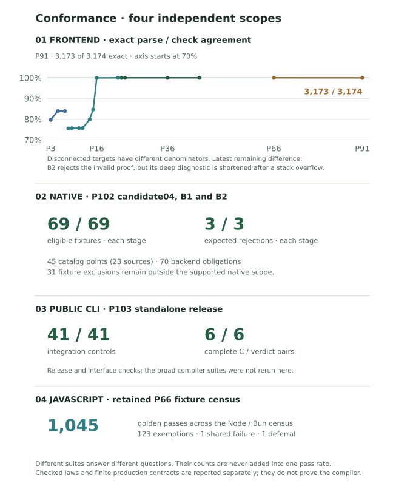
Correctness supports each optimization. One JavaScript diagnostic difference remains; passing executable controls does not prove the whole compiler.
| Scope | Result | Boundary | Evidence |
|---|---|---|---|
| Native fixtures · P102 | 69 passes + 3 expected rejections per stage | 31 exclusions; B1 and B2 qualified separately | Source report ↗ |
| Native semantic catalog · P102 | 45 / 45 catalog points | Includes the zero-work control; not 45 timing ratios | Source report ↗ |
| Native backend bridges · P102 | 70 obligations passed | Overlaps other native tests; not added to fixture counts | Source report ↗ |
| Public CLI · P103 | 41 / 41 controls; 6 / 6 C/verdict pairs | Integration and exact output checks, not a new broad timing campaign | Source report ↗ |
| JS frontend · P91 | 3,173 / 3,174 exact | Invalid proof is rejected; B2 falls back to shorter diagnostics after deep rendering overflows the JS stack | Source report ↗ |
| Historical JS execution · P66 | 1,045 distinct golden passes | 123 exemptions; 1 shared Process.run failure; 1 graphics deferral | Source report ↗ |
Phase 96 independently checks 31 public laws and 7 supporting lemmas. Phase 98 connects 13 distinct accepted statements—8 public and 5 support—to selected production helper closures. The larger historical catalog includes unpromoted experiments. Finite tests and native memory behavior require their own evidence.
Law suite and exact scope ↗The canonical source grew 20.15% from Phase 66 as native compiler functionality expanded. Ordinary native requests now run directly, with CLI policy and compiler algorithms written in Bend.
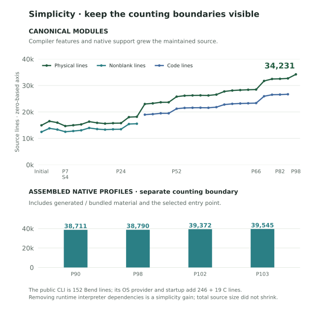
No Python, Node, Bun or TypeScript interpreter is needed for an ordinary public native request. Bootstrap, development and benchmark tools retain their own dependencies.
| Checkpoint | Physical lines | Modules | Evidence |
|---|---|---|---|
| Initial | 14,950 | 57 | Source report ↗ |
| P5 | 16,509 | 59 | Source report ↗ |
| P7 / S1 | 15,961 | 59 | Source report ↗ |
| P7 / S4 | 14,667 | 59 | Source report ↗ |
| P8 | 14,977 | 59 | Source report ↗ |
| P15 | 15,288 | 59 | Source report ↗ |
| P16 | 16,345 | 59 | Source report ↗ |
| P19 | 15,880 | 59 | Source report ↗ |
| P22 | 15,600 | 60 | Source report ↗ |
| P23 | 15,748 | 60 | Source report ↗ |
| P24 | 15,776 | 60 | Source report ↗ |
| P35 | 18,050 | 68 | Source report ↗ |
| P36 | 18,174 | 69 | Source report ↗ |
| P45 | 23,007 | 85 | Source report ↗ |
| P47 | 23,254 | 86 | Source report ↗ |
| P48 | 23,660 | 92 | Source report ↗ |
| P51 | 23,662 | 92 | Source report ↗ |
| P52 | 25,790 | 101 | Source report ↗ |
| P53 | 26,151 | 103 | Source report ↗ |
| P54 | 26,259 | 107 | Source report ↗ |
| P55 | 26,286 | 107 | Source report ↗ |
| P56 | 26,246 | 107 | Source report ↗ |
| P58 | 26,560 | 108 | Source report ↗ |
| P61 | 27,753 | 114 | Source report ↗ |
| P63 | 28,115 | 114 | Source report ↗ |
| P64 | 28,279 | 114 | Source report ↗ |
| P65 | 28,396 | 115 | Source report ↗ |
| P66 | 28,490 | 115 | Source report ↗ |
| P73 | 31,730 | 129 | Source report ↗ |
| P78 | 32,471 | 132 | Source report ↗ |
| P82 | 32,540 | 132 | Source report ↗ |
| P90 | 32,692 | 132 | Source report ↗ |
| P98 | 34,231 | 134 | Source report ↗ |
Installed JavaScript compiler source remains 32,692 lines in 132 modules, a distinct release inventory. Assembled native compiler: 39,372 lines in promoted candidate04. Public CLI compiler: 39,545 lines, +173 (+0.44%). Assembly includes additional material, so these counts must not be connected to the canonical-module curve.
CLI implementation and source accounting ↗Follow the labels, then the trend. Each result identifies the compiler host, emitted language, workload, baseline and clock. Compiler-request time and complete-process time answer different questions. A new workload or reference starts a separate comparison; it does not silently extend an earlier line.
02 / BEYOND THE BENCHMARKS
Index source. Render an image. Plan dependencies.
Each application keeps its own comparison.
Phase 102 candidate04, measured over four balanced rounds. These complete native processes include startup, useful work and output; their timings stay separate from the 44-point average above.
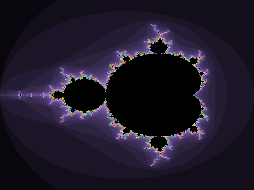
Actual Phase 100 application output · lossless PNG of the checked PPM
Render every pixel of a deterministic Mandelbrot image, with explicit row-based parallel work.
Near upstream speed on one worker. 0.986× upstream time on one worker; 1.195× on four.
Four-worker execution remains 19.5% slower than upstream. This measures the complete image and its output, not only the numeric kernel.
Phase 100 measured Phase 98-generated code: one to four physical cores gave 2.05× speedup. This is a separate historical campaign, not a new scaling claim for candidate04.
| Workers | Native process (ms) | Upstream process (ms) |
|---|---|---|
| 1 | 346 | 257 |
| 2 | 216 | 155 |
| 4 | 168 | 115 |
kind line name import 2 Base type 4 Greeting def 7 Greeting.text def 11 example def 14 escaped def 17 marker def 20 main
Declaration-table excerpt for the checked sample.bend fixture
Read a source file and list declarations with line numbers, alongside UTF-8 and lexical summaries.
0.912× upstream time on generated source. Indexing the full compiler source takes 1.077× upstream time.
This is lexical indexing, not parsing or compiling the source. Compiler-text indexing remains 7.7% slower than upstream; the generated-definition candidate run is short, about 56 ms.
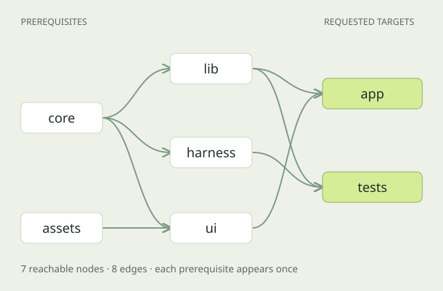
Diagram of the checked shared.graph fixture · arrows point to consumers
Turn runtime graph inputs into a prerequisite-first plan, including shared dependencies, cycles and missing-node diagnostics.
4.46× upstream speed on the shared graph. The dependency chain runs 4.07× as fast as upstream-generated C.
The planner remains serial and uses linear lookup. Its backend win does not remove the algorithm’s worst-case quadratic or O(VE) scaling.
03 / THE IDEAS BEHIND THE GAINS
Less copying. Less repeated work. Native execution.
Useful changes, with their costs and limits attached.
A compiler invocation includes more than checking the requested program. It starts a process, loads its implementation, prepares the standard library, emits C and writes the result. The new comparison times this complete child process for all three compilers, using identical input sources and verifying every complete output. Their internal request timers cover different work and are kept out of the headline ratio.
The native compiler can reuse an authenticated prepared Base carrier, while upstream checks Base from source. With that configured workflow, B2 takes 0.517× upstream time across 23 original programs; asking it to check Base from source raises the ratio to 2.231×. This identifies shared-library preparation as a practical fixed cost, while keeping its one-time preparation cost outside the measurement explicit.
The full 1.79 MB compiler source exposes a different problem: B2 takes 143.646 seconds against upstream’s 48.442 seconds, or 2.965× the time. B1 also takes 2.602× upstream time, so the gap is already substantial before the compiler builds itself. This large workload remains separate from the small-program average and gives future profiling a concrete target.
Prepared and live modes have separate upstream controls. Broad results use two samples per point, from 45 points derived from 23 originals; full-source prepared results use two samples. Clang, outer launcher/authentication and offline carrier creation are excluded. This measures the admitted native core, not the public CLI entry.
A value that is already available should not need another continuation, boxed tuple or reference-count wrapper simply to reach its next consumer. The native backend now carries scalar, product and ownership facts through calls, loop backedges and suspension. Borrowed observers traverse shared data while an owning adapter keeps the roots alive; known unshared constructors can transfer their fields directly.
These connections made generated native code competitive. In Phase 73’s paired twelve-family campaign, average execution time fell from 1.369× to 1.051× upstream C. The list pipeline and BST matched upstream allocation counts, while Tape’s combined borrowing and storage changes reduced execution time from 896.5 to 266.5 ms. Earlier Phase 72 connected existing product transport with just 13 added physical lines.
The twelve-family diagnostic campaign is separate from the later 45-program catalog. Phase 73 increased B1/B2 compilation time by 7.33%/6.28%; four families still ran 1.37–1.53× slower than upstream. Allocation counters come from separate instrumented runs.
Annotation had already computed normalized types and constructor-field quantities. Reusing those facts avoids rebuilding environments and layouts. A whole-program escape index also lets exactly saturated calls skip unneeded curried factories, shrinking the three Phase 78 timing programs’ C by 21–23%. Unsupported calls keep their ordinary path.
Phase 82 then removed fixed work from every native request. Bend prepares the invariant runtime text once; each request verifies and consumes that artifact. The request also carries its existing source-ID bound into validation, avoiding another walk. The paired campaign used 6.15% less B2 request time, with a larger 20.7% saving on the small held-out program.
These are JS-hosted compiler images emitting C. Request clocks exclude imports, explicit prepared Base, Clang and program execution; upstream checks Base inside its request. Artifact verification remains inside the request clock. This work does not establish a universal cold-compilation ratio.
Moving the compiler out of a JavaScript host exposed costs that small programs had hidden: deep recursive traversals, growing-prefix String construction and repeated graph searches. Tail loops, chunk collection and indexed lookup removed those scaling barriers. Phase 90’s native compiler emitted its complete 38.6 MB C image in 164.3 seconds; the preceding version had reached a 600-second timeout without output.
Building that C exposed a different bottleneck in LLVM’s call graph. A small accessor for large dispatch tables let the optimized build finish with 3.89 GiB peak RSS after an earlier 10 GiB attempt had failed. The current candidate04 chain has a fresh exact emitted-C fixed point: native B1 and B2 reproduce all 30,373,059 bytes, with complete diagnostic agreement.
The historical timing milestones use different source versions and are not a controlled speed curve. Candidate04’s B2 self request is 150.846 s in one qualification observation; no new self-speed gain is claimed. Exact emitted C is not an ELF fixed point, a built B3 executable or a whole-compiler proof.
Direct workers were available, but composing them could recreate continuations and temporary products. The new lowering keeps eligible local calls direct, turns final-field constructor recursion into loops, and recognizes owning observers whose result is immediately projected to a scalar. The resulting worker performs the borrowed computation, checks errors and releases its roots without constructing two temporary tuples.
The promoted candidate04 retains these paths with a corrected inline-cost policy. Across 44 positive-work runtime points, generated programs average 1.043× upstream C time. The generated-source index runs at 0.912× upstream time, and the dependency planner at 0.224× on its shared graph. These complete applications show where the compiler’s choices reach ordinary useful work.
Equal-source runtime weighting gives 1.065× upstream. Candidate03’s fold regressions led to the corrected candidate04 policy. Complete application clocks and warmed benchmark clocks remain separate; historical release changes stay in the graphs.
Run selfhost/bend input.bend -o output.c to invoke the native compiler directly. A 152-line Bend entry owns arguments, asset identities, cache/live selection, compiler invocation, diagnostics and exit decisions. Ordinary requests need no Python, Node, Bun or TypeScript process. Three narrow C host effects provide authenticated file and byte operations.
The package locates its assets beside the executable and passes relocation, corrupt-asset refusal and atomic output-publication controls. All 41 final CLI controls pass, and six source pairs produce exactly the same C and compiler verdicts as candidate04. One small three-pair public-interface observation falls from 550 ms with the former Python launcher to 208 ms with the direct executable.
The small timing compares the actual public interfaces, including their different capture envelopes; it is not a compiler-kernel or upstream speed comparison. Linux x86-64 with /proc is supported. The native one-source/nine-effect boundary remains. The CLI build uses an explicit bridge with a different host entry, so it adds no matched-source fixed-point claim.
The compiler now has a reusable foundation of 31 public laws independently checked by the unchanged BendTT kernel, plus executable contracts over complete production values. The suite deliberately checks incorrect implementations as well as positive examples. Independent challenges exposed two coverage gaps; the strengthened contracts cover those missing helpers without changing the original expectations.
Phase 98 connected proofs to the exact retained-string comparison, term-tag and provider-membership helpers selected for the native compiler. Thirteen distinct statements are bound to those final helper closures. A small finishing helper keeps owning Strings alive during comparison so borrowed reads can avoid per-character ownership work; paired B2 full-source requests then fell from 150.5 to 141.0 seconds.
The foundation and selected-closure counts describe different scopes and are not additive coverage totals. The proofs do not establish runtime reference counting, native memory safety, foreign effects or whole-compiler correctness. Native profiling found a real termination defect outside those value equations; executable controls remain essential.
These findings retain their original measurements, baselines and qualification. Use the metric filters above to follow a topic through the whole history.
The compiler now follows upstream 0592662, incorporating a 95-commit change set. Namespace, Base-library, runtime and native ABI changes were qualified together. The final corrections reuse successful printability visits, handle Min through the existing erasure rules, and replace the separate 64-field call-analysis ceiling with the existing scan budget.
An executable dependency audit retains all 3,174 exact frontend observations against the new reference. Across 1,170 JavaScript-eligible fixtures, fresh Node results plus verified reuse of identical Bun modules and runtime give 1,045 distinct Bend golden passes and zero observed cases where TypeScript passes but Bend fails. The release also passes fresh B2 own-source checking, exact B2/B3 reproduction and installed CLI checks.
The JavaScript total retains 123 unprintable-main exemptions, one shared Process.run failure and one graphics deferral. Native admission still excludes 13 methods. Source grows 94 physical Bend lines (+0.331%); runtime and host costs are counted separately. These finite results do not establish universal conformance or proof validity.
A fresh execution campaign passes all 669 samples across 45 points and 23 sources. Compiled programs average 1.049282× the new TypeScript reference with equal-point weighting; equal-source weighting gives 1.046987×. B1 and B2 emit identical complete programs for the entire measured corpus, so the executed artifacts qualify both producers.
The paired migration comparisons are effectively flat: program execution changes +0.038%, B2 compilation −0.230%, and B1 compilation +0.530%. The new compilation averages are 1.321100× for B2 and 1.402065× for B1. Including imports/API loading gives separate 0.990389× and 0.982634× results. The benchmark reference changed, so P65’s 1.28945× B2 average cannot be read as a direct before/after regression.
The tiny paired changes are descriptive, not established optimizations or regressions. Mandelbrot grid remains 1.619× TS and active raytrace 1.337×; the average does not erase individual gaps. Execution excludes compilation, import, first call and warmup. Both compiler campaigns cover 23 sources and 207 exact-output workers.
Twelve small static readers replace the large cache-decoding loop while retaining eager validation, object shapes and graph sharing. Compiler algorithms stay in Bend; the JavaScript readers handle transport. Separately, Bend produces reusable annotations for sufficiently large Base definitions. Header and identity checks happen before heavy reads, and absent, stale or ineligible products take the ordinary annotation path.
The complete release reduces B2 compilation by 9.03% across all 23 sources, from 1.41737× to 1.28945× the old TypeScript reference. Its import-inclusive average reaches 0.969256×. The isolated first-decode measurement improves from 64.47 to 27.13 ms; a separate same-image artifact ablation reduces Map compilation by 5.13% and map-churn by 3.15%.
The isolated decoder and artifact gains are separate experiments and must not be added or multiplied into the release result. Product permission is tied to exact qualified Base content; custom Base keeps the fallback. The release adds 117 physical Bend lines and 146 host-support lines. Several reuse proposals were rejected after unchanged or slower full requests.
The compiler retains the Base TODO count and exact checked bound, shares host-signature work, and avoids rendering argument strings that tail-call admission would immediately discard. An indexed cache representation reconstructs the same semantic values with fewer intermediate records. Every record still receives eager structural validation, including unused records.
The complete B2 release cuts compilation time 12.47%, from 1.64387× to 1.43894× TypeScript in its own balanced comparison. All 23 sources improve, with identical emitted programs. In a separate transport experiment, read/hash/validate/materialize time falls from 129.25 to 71.16 ms while serialized size falls only 3.21%: the useful change is cheaper reconstruction, not merely fewer bytes.
A candidate that removed child-type work made the B1 screen 2.34% slower and was removed. Small local gains are not independently established: an identical-image control moved 3.82%. Host support adds 142 lines, and legacy cache-format compatibility remains a maintenance cost. The final B2 result measures the selected bundle.
An authenticated prepared Base world and parser indexes replace repeated reconstruction. A lowering plan owns one immutable annotated context and saves reachable definitions for final emission; already computed arity and host-field facts travel with their consumers. A specialized validated graph decoder makes the retained state economical to load in a fresh process.
The selected B2 takes 20.55% less compilation time across all 23 sources: 2.05505× to 1.63275× TypeScript in the same campaign. Imports plus the first compilation improve 18.18%. Complete emitted modules remain identical. Six adversarial source controls check the context boundary across 45 execution observations, and 558 arity queries agree with the original query, including 74 fallback cases.
This is scoped ownership, not a general cache across arbitrary contexts. A generic graph decoder won a warm microbenchmark but lost on fresh requests; only the qualified successor shipped. The release adds 362 physical Bend lines (+1.30%) and 231 host-support lines. No new generated-program speedup is claimed.
The compiler can resume privately authenticated Base freshening and checking state, with source/API binding and conservative fallback. Compact persistent indexes, bounded dependent-term substitution, export-local facts and structured emission transport remove more repeated work. The prepared state restores the checker’s actual fresh-name progress; an early assumption that checking left this state unchanged was disproved and rejected.
The selected B2 release reduces compilation time 45.71%, from 3.816429× to 2.071828× TypeScript. Imports plus the first compilation fall 42.10%, from 2.476542× to 1.433877×. Every source improves in the balanced 23-source, 207-worker campaign, and all full emitted modules match. Fresh own-source checking, exact B2/B3 reproduction and release gates also pass.
The broad result combines the selected compiler and host/cache changes; no individual pass owns the full reduction. A binary codec was rejected at 2.26× JSON decode-plus-validation time, and a backend cursor was reverted after mixed B1 results. The release adds 152 host-helper lines; runtime bytes remain unchanged.
The two-program screen expanded to all 23 independent sources behind the 45 runtime points. With the unchanged Phase58 B2, Phase60 found a 2.461× import-inclusive average but 3.794× for compilation alone. Faster Bend startup had hidden part of the compiler-work gap. The survey made equal-source weighting, full output checks and both clocks the basis for later release comparisons.
After Phase61, diagnostics located the remaining excess in prepared-state/loading work and the backend. Actual file reading was only 1.75 ms on average; JSON conversion and validation were much larger. Backend facts were repeatedly rediscovered, but the narrow arity family represented only about 2.3% of CPU sample counts. This directed later experiments toward coherent state and lowering ownership.
Phases59, 60 and 62 changed measurement or analysis tools, not the installed compiler. Diagnostic timings and allocation shares are not additive predicted savings. Repeated requests were still warming, and the B1/B2 generation comparison covered only four sources; it does not replace the 23-source release average.
Constructor queries now skip unmatched entries without building temporary missing records. Proven numeric residuals reuse their original U32 bits instead of rebuilding Word lists, and structurally known Boolean choices enter the selected branch directly. The constructor probe reduced missing-helper calls from 4,248 to three while preserving its fallback behavior.
Across the complete six-change release, sampled B2 lexer allocation fell from 2,190.55 to 231.95 MB per request. Fresh import-plus-first requests fell from 4.582 to 2.009 seconds for Evening and 2.938 to 1.500 seconds for lexer. The selected B2 takes 2.415× and 2.622× TypeScript time on these two inputs.
These are combined release results, not isolated attribution. Allocation is a sampled cumulative estimate from one worker per role, not peak RSS. B1 request changes remain small and mixed; B2 later requests are still warming up.
Exposing more tail calls initially made each entry repeat its recursive component's entire switch. One private dispatcher now serves the component, while each named entry keeps its parameters and a fixed entry state. Per-call state preserves nesting and callback reentry. Reachability also records each target reference only once per definition, retaining encounter order and resource limits.
The final B2/B3 image is 3,821,470 bytes, 1.94% smaller than Phase 56. The complete release emits its own source in 36.058 seconds against a retained 223.475-second Phase 56 run under the same method: a descriptive 6.20× speedup. Both outputs reproduce their own compiler images exactly.
The speed ratio compares changed sources and an earlier retained control, not a consecutive pair or dispatch-only effect. The expanded 8.67 MB intermediate was never the starting release. Clean 36.058-second emission is separate from the 39.199-second qualification gate.
Ordinary field keys made the compiler faster, but the first combined candidate slowed several generated programs. The selected printer uses quoted prefix keys and keeps the final live field computed; __proto__ always remains computed. This general rule preserves own-property and evaluation-order behavior while balancing the two costs.
The final last01 campaign passes all 45 points and 669 samples. Its equal-point execution ratio is 1.046110× TypeScript, versus a fresh Phase 56 baseline of 1.061731×: 1.47% less time. Evening improves 26.48% and RLE 12.75%. All 19 small regressions remain visible; the largest is 2.949%.
The field compromise cost 13–17% against an all-literal compiler diagnostic and missed its approximate 10% target. The final combined release was then measured separately. V8 observations do not establish the precise cause; full release source grows by 314 physical lines.
Native String.eq now uses JavaScript equality inside its function definition. Existing call sites keep their callback order and partial-application behavior. Alongside removal of seven unused helpers, this small change let the direct B2 image finish both a fresh check of its complete source and emission of an identical successor, B3.
The source check took 29.68 seconds internally. The separate reproduction gate completed in 250.72 seconds, with identical 3,896,951-byte B2 and B3 images. The two compiler generations also emitted identical modules for all 23 benchmark sources and 45 observed points. Phase 58 renews these qualifications for its later image.
The previous reproduction stopped at 300 seconds, so it supplies no exact speedup. Type acceptance retains the expected unsafe proof-trust refusal and is separate from mathematical proof validity. The installed package remains checked B1.
B1 generation of the direct B2 compiler image kept searching the whole book to rediscover a constructor's datatype, even though checked matcher annotations already identified it. Export generation also rescanned recursive argument and result types for Nat conversions. The fixes use the known owner and one complete signature check, with the old paths retained when those facts are unavailable.
On one unchanged compiler source, the second change cut export-wrapper generation from 121.39 to 20.92 seconds. Complete B1 → B2 image generation fell from 198.49 to 96.23 seconds, and the resulting 3,895,592-byte images were exactly equal. These small general changes made the full direct compiler image usable after the earlier deadline failures.
Single bounded generation observations with diagnostic overhead, not ordinary request throughput. The original 240-second timeout has no completed baseline time. Eight ordinary-driver observations separately checked the emitted images.
The direct backend used to store the functions reachable from every function separately. Forward and reverse graph walks now identify recursive groups once and share their facts. This removes repeated closure searches while preserving source order and the existing tail-call decisions.
The production definition budget rose from 512 to 4,096. Using the installed first-stage compiler, five checked source chains through 3,004 declared functions compiled successfully, and every emitted program returned the expected result. All 45 benchmark modules remained byte-identical to Phase 53.
Phase 54 adds 108 physical Bend lines. Graph visits and retained graph data become linear in vertices plus edges, excluding name-index and type-normalization costs. Explicit budgets change the acceptance policy. These are capacity and correctness results, not a measured whole-compiler or program-speed gain.
Profiles separated expensive public-entry checks from generic call transport. The new backend lowers checked Bend terms to lexical JavaScript functions, native closures and native data. Known calls become ordinary calls, and self or mutual tail recursion becomes loops. This exposes a native-callable interface; applications that need mutable function descriptors keep the explicit legacy backend.
The Phase 52 paired campaign reduced the 45-point geometric execution-time ratio from 2.630605× to 1.123799× TypeScript: a 2.340815× speedup. Distinct emitted JavaScript shrank from 4,194,685 to 1,053,920 bytes, including runtime and observers. Phase 53 subsequently makes this direct interface the default.
This changes the JavaScript interface contract. Seven points regressed in P52; closures256 became 2.217× slower while remaining 1.038× TS. Keeping legacy compatibility adds 2,128 physical Bend lines (+9.0%); smaller output does not mean a smaller compiler.
The emitter carries statements and a pending value through calls, constructors and lets. It can then inline primitive operations while preserving the reference's observable callback order. Partial applications keep their work deferred, and captured values receive separate held names. A census of four modules found 202 primitive call sites and 30 wrapper declarations removed.
The complete paired campaign moved the 45-point geometric ratio from 1.129266× to 1.069599× TypeScript, a 1.055785× speedup. Original symbolic regression fell from 1.324 to 1.102 milliseconds; ray tracing fell from 57.474 to 48.937 milliseconds. All 669 fresh samples passed their output checks.
Twelve of 45 points regressed, at most 3.4%; six timing flags remain. Equal-source weighting gives 1.078× TS. Adds 361 physical Bend lines. Removed syntax is not a measured allocation count or proof of a V8 mechanism.
A cold conversion through an ordinary JavaScript array could lose a NaN payload. Writing directly to fresh typed-array storage preserves the tested bits, with one conversion and no shared mutable buffer. The original fixture's expected result stays 40: the repaired compiler returns 40, where its predecessor returned 39 and pinned TypeScript returned 1.
The original independent source suite advances from 95 to 96 passing scenarios out of 96. All 34 numeric controls, 18 composition controls and two genuine overapplication controls pass their separate contracts. The installed direct default also passes all 66 ordinary and relocated interface checks, including explicit legacy compatibility.
These Phase 53 control sets overlap and are not a unique language-test total. Exact reference agreement was 95/96 because TypeScript retained its NaN oracle failure. The later P56/P58 B2 self-reproduction qualification is reported separately.
The compiler can keep an Array<U32> as direct backing storage throughout a known private call graph. It checks ownership and effects at the entry, then emits writes as ordered statements. The same representation now reaches recursive tree helpers, so an enclosing private path can benefit too.
In the final paired comparison, original edit distance fell from 10.501 to 5.638 milliseconds, a 1.86× speedup. The 8,192-step fold fell from 172.845 to 109.171 microseconds, reaching 0.956× the TypeScript time. The full 45-point geometric improvement was a smaller 1.057×.
Adds 247 Bend lines. The 128-step fold became 1.930× slower (7.603 → 14.671 µs); fresh entry costs matter for short work. Compiler requests rose 0.87–3.75% on three measured inputs.
An efficient private computation still needs a usable result boundary. Composite-result adaptation let the existing fast region return a complete record containing four arrays. The whole result stays observable. Related changes carry native strings and finite float values through their supported paths.
The complete generic-row case fell from 377.077 to 28.000 microseconds, a 13.467× speedup. That result contributed 72.1% of the net equal-point logarithmic gain. The other 44 points collectively improved 1.023×, while the full corpus improved 1.083×.
The gain is concentrated in one case. Adds 406 physical Bend lines; measured Evening and lexer compilation requests rose 3.27% and 4.41%. Tuple-removal experiments that did not improve execution were deferred.
The checker repeatedly walked preceding definitions to choose fresh binder identifiers. That repeated work grew with each declaration. Computing the bound once removed the scans while keeping declaration visibility unchanged.
On the 16-fill probe, full-book scans fell from 17 to 1. The complete Phase 9 release reduced checking process time from 208.224 to 66.844 seconds. Smaller checking and equality repairs contributed too.
Mechanism probes explain the change; release timing measures the combined implementation.
Numbers and strings had become large constructor trees. Later passes copied, renamed and serialized those trees repeatedly. Compact literal nodes keep the value small and reveal a constructor view only when a consumer needs it.
A separate same-source census reduced freshened terms from 2,171,045 to 152,620 and constructor/list JSON from 337 MB to 25.3 MB. The final Phase 16 release cut checking time from 30.584 to 12.357 seconds and peak memory by 62.7%.
The structural census and final timing use separately identified source snapshots. The release also includes frontend work.
The useful simplifications removed competing ways of doing the same work: obsolete algorithms, a second parse to recover source origins, and rechecking a failed body just to format its error. One loader trace and one structured checker result became authoritative.
The dedicated cleanup reduced the compiler from 16,509 to 14,667 physical lines. Later, ordinary definitions and live instances shared one checking traversal, removing 475 lines relative to the immediate predecessor. New conformance and runtime work subsequently grew the codebase.
Line counts measure maintained source size. They do not count concepts or prove that every smaller implementation is better.
A lookup can be expressed as repeated branch closures and trampoline messages—or as a direct tail loop. A small Boolean worker exposed the loop to the existing emitter. The Phase 17 lookup-worker release reduced checking process time by 6.55%.
Later, a scope-index miss proved that a local name was absent, allowing the old scan to be skipped. An index hit still used the original lookup order. That distinction preserves duplicate-name behavior; the Phase 24 release improved checking time by another 4.9% in its own paired window.
These are independent release comparisons. Their percentages should not be compounded across changing compiler sources.
Good error messages need to identify both the right program location and the right semantic checkpoint. A shared renderer restored carets consistently, while source origins attached when terms were created survived later transformations.
Phase 15 closed 144 exact frontend differences. Phase 16 then reduced the remaining differences from 459 to 2 without losing a previous match. Keeping compact literals alongside source information made richer diagnostics affordable.
These differences include diagnostics and rejection phase, not only whether a program is accepted.
A context-free parse followed by reconstructed scope could select the wrong error or declaration. One contextual frontend now carries lexical scope, aliases and fresh-name state at the points where they matter. One materializer performs the early or deferred semantic work.
That closed the last two main-suite differences and brought the broader selection from 139 to 196 exact observations. It also removed 300 net lines. The first candidate was 32.8% slower; profiling and lookup repairs recovered that cost, ending 2.9% faster in the final paired comparison. Later releases retained exact agreement on the expanded target.
Phase 36 retains 3,026 main and 196 broader exact observations. The selections partly overlap; backend coverage is separate.
A full self-rebuild took tens of minutes. Routine edits moved to a checked bootstrap plus focused differential cases, with broad suites and fixed-point checks kept as separate integration evidence. Phase 36 reports 42.3 seconds for checked acquisition and 36 focused checks.
The runtime harness separates one-time compilation from execution, validates inputs and outputs, rotates fresh processes and lets experiments select individual cases. Profiles and generated-source comparisons then show where time and allocations go. The Phase 36 one-case symbolic-regression screen took eight seconds.
These are workflow observations, not an equivalent-task speedup over a full self-rebuild.
A U32 projection used to allocate 32 linked word nodes, then pass through generic matchers. For eligible checked decision functions, the compiler can instead emit bit tests on the original unsigned number while preserving the ordered decision tree.
On the dense-table diagnostic, execution improved 11.8× and constructor calls dropped from 8,481 to zero per benchmark call. Unsupported result shapes keep the generic path. This established a focused mechanism to pursue in larger programs.
A diagnostic kernel result, not a whole-program average. The implementation added 110 Bend lines.
Scalar arithmetic and countdowns became ordinary JavaScript expressions and loops. The next step joined them into guarded private regions: direct branches, lexical helpers and reusable tree frames. Keeping these operations together removed costs that were hard to eliminate one tiny call at a time.
Original Mandelbrot execution dropped from 21.379 to 0.212798 milliseconds in the final Phase 30 window: 100.47× faster. Broader tests also led to removing redundant arm prebinding, deleting 64 implementation lines, eight functions and an obsolete module.
The gain is workload-specific. Ordinary compiler checking cost 4.86% more, and some small-work canaries regressed.
Internal arrays and records were repeatedly crossing generic call boundaries. A checked closed-region boundary let the compiler use direct private workers while keeping public representations, aliases and evaluation order intact.
The original four-pair edit-distance workload fell from 1,900.375 to 70.817 milliseconds. Complete-pair and fold diagnostics also improved in their own window. The boundary gives a precise condition for using the faster representation.
Edit-distance compilation request time increased 6.90%; zero-work and generic-row canaries also became slower.
Inside the proved region, statement unpacking, typed immediate reads and private field vectors eliminated temporary wrappers. Public boxed records and observable array operations retained their original behavior. The runtime and driver stayed unchanged.
Original edit distance improved again, from 72.266 to 20.398 milliseconds in the Phase 32 window. This focused change added 57 Bend lines. Proposed caches and memoization did not meet the experiment criteria and were left out.
This is a separate paired window from Phase 31. Mandelbrot compilation was 1.91% slower.
Profiles pointed to vectors, loop state and tree traversal. Selective inlining replaced immediately consumed fields with loop slots, while closed structural folds walked tagged trees using an explicit postorder stack. Larger proved scalar regions could run directly.
The final comparison measured 6.865× faster symbolic regression and 5.475× faster ray tracing. Separate allocation samples fell by about 8.4× and 9.5× per call on those cases. Broad inlining had caused severe regressions, so the release kept the selective approach.
The compiler grew by 979 lines (5.73%) and some compile requests rose 8–34%. Allocation samples are estimates.
When the whole call graph is proved pure, covered nested calls can reuse the same guard checks inside a private scope. The scope is restored on exit, and error construction suspends the proof so callback reentry keeps its meaning. Private tree producers and selectors also become direct operations.
Symbolic regression improved from 15.582 to 4.265 milliseconds, and ray tracing from 1,859.589 to 801.893 milliseconds. Seven new control groups cover the tricky boundaries. That Phase 36 release retained exact frontend comparisons and passed all 42 ordinary and relocated CLI checks.
Adds 124 lines (0.687%). Compilation medians rose 4.50% / 4.02% for these cases, with overlapping three-sample ranges.
04 / THE NEXT QUESTION
A measured starting point.
A research question still to answer.
| Development case | B1 request (ms) | B2 request (ms) | B1 process (ms) | B2 process (ms) |
|---|---|---|---|---|
| Small | 47.0 | 46.5 | 136.2 | 156.2 |
| Lexer | 311.0 | 303.0 | 410.2 | 410.8 |
Phase 104 audited the native stage lineage and established a small measurement baseline: 16 fresh requests preserved complete C and diagnostics. Phase 105 now supplies broader upstream comparisons, including complete compiler-source compilation. Neither campaign changes the installed compiler or demonstrates accelerating research yield.
Its next question is practical: does a faster compiler buy more independently validated progress? The proposed experiments compare normal and deliberately delayed compiler service, then frozen and updating builders, while charging build, validation and research costs. Smaller emitted C and cheaper Clang builds may matter as much as faster Bend requests.
These historical build components are not a new end-to-end benchmark. B3’s C input is established, but its executable was not built; no B3–B5 timing or recursive acceleration is claimed. The auditor is development tooling, not an isolated evaluator.
05 / FOLLOW THE EVIDENCE
Native program speed is the geometric mean of 44 positive-work time ratios against upstream C output. The equal-source average is labeled separately. Native B1 and B2 compilation use complete child-process time, from startup through C output and exit. The headline weights 23 original source programs equally; prepared Base and Base checked from source have separate upstream controls. Full compiler-source compilation is a separate large workload. JavaScript compilation retains its 23-source request and loading clocks. Changed hosts, corpora and baselines are never joined into one continuous trend.
Frontend agreement, native programs, backend contracts and command-line controls test different behavior. Counts are not added across overlapping suites. Expected rejections are labeled, diagnostic differences remain visible, and reused observations retain their provenance. An emitted-C fixed point is a reproducibility result; local proof checks establish only their stated optimization contracts.
Canonical module lines, assembled compiler lines, command-line policy and C providers are separate counts. Their histories are labeled rather than spliced. Native deployment removes interpreter dependencies from ordinary requests, while bootstrap tools, generated C, the runtime and tests remain distinct parts of the system.
The native core is Phase 102 candidate04. B1 and B2 compile the same source and produce the same 30,373,059 C bytes and clock-stripped diagnostic. Phase 104 re-authenticates the archived artifacts; it does not build a B3 executable. Phase 105 now measures complete compiler-source process time twice per role: upstream 48.442 seconds, native B1 126.051 seconds and native B2 143.646 seconds in the prepared workflow. These fresh process clocks differ from the older internal self-emission observations. Building the executable with Clang is a separate clock.
The Phase 103 standalone command uses that native core with a public Bend entry point and a distinct build bridge. Its 41 integration controls and six complete C/verdict pairs pass. This release does not establish a new matched-source fixed point. Ordinary requests need no Python, Node, Bun or TypeScript subprocess. Bootstrap and development still use external tools, and emitting C still requires a C toolchain to produce an executable. The CLI is qualified on Linux x86-64 for its documented source and effect scope.
The broad frontend comparison is 3,173 of 3,174 exact observations: B2 rejects one invalid proof correctly but prints a short fallback when deep diagnostic rendering overflows its JavaScript stack. Historical JavaScript golden coverage retains 1,045 passes, 123 unprintable-main exemptions, one shared Process.run failure and one graphics deferral. Native fixtures, semantic programs, backend obligations and CLI controls have separate gates and dates; the public CLI release did not rerun every older campaign.
Phase 105 adds 693 timed compiler requests, 45 upstream reference acquisitions and 12 generated-product execution checks. Native prepared mode reuses an authenticated Base carrier; upstream checks source Base in both prepared and live comparisons. Carrier creation, the outer experimental launcher and Clang are outside the timed process. Broad compilation has two samples per case, so the large workflow differences are informative without implying precision about tiny changes. No compiler was rebuilt or promoted, and generated-program runtime was not remeasured. Native runtime remains Phase 102; JavaScript timing is retained through output-identity evidence.
The immutable report snapshot is c2ef383c35847df62d0643e3fdeb2c2899687ca5. The upstream reference is 0592662; historical results retain their original pins. Data was collected on 17 Oct 2026. Every historical finding keeps its original phase and measurement scope.